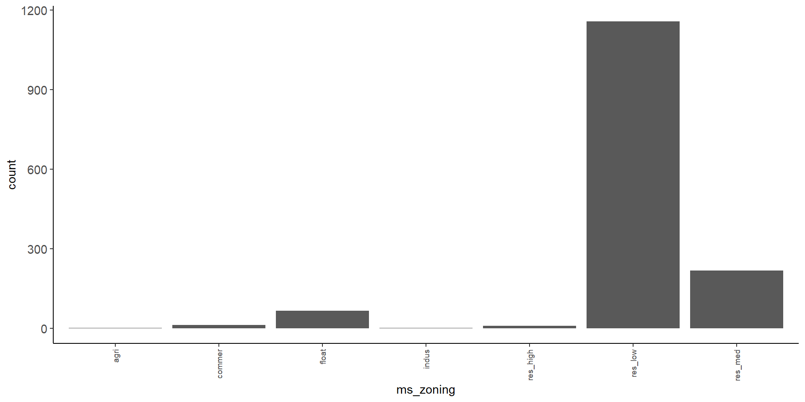
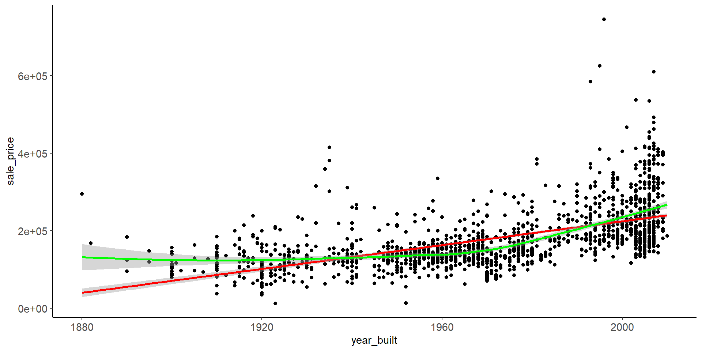
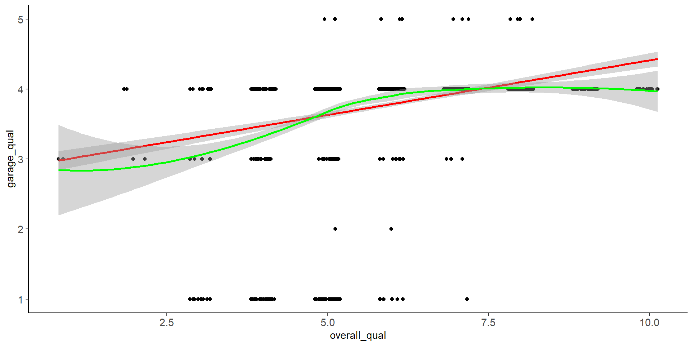

Exploratory Data Analysis
Overview of Unit
Learning Objectives
- Stages of Analysis
- Best practices for data storage, variable classing, data dictionaries
- Problems and solutions regarding data leakage
- Key goals and techniques cleaning EDA
- Tidying names and response labels
- Appropriate visualizations based on variable class
- Summary statistics based on variable class
- Proper splitting for training/validation and test sets
- Key goals and techniques modeling EDA
- Appropriate visualizations based on variable class
- Summary statistics based on variable class
- Introductory use of recipes for feature engineering
Readings
[NOTE: These are short chapters. You are reading to understand the framework of visualizing data in R. Don’t feel like you have to memorize the details. These are reference materials that you can turn back to when you need to write code!]
- Wickham, Çetinkaya-Rundel, and Grolemund (2023) Chapter 1, Data Visualization
- Wickham, Çetinkaya-Rundel, and Grolemund (2023) Chapter 9, Layers
- Wickham, Çetinkaya-Rundel, and Grolemund (2023) Chapter 10, Exploratory Data Analysis
Lecture Videos
- Lecture 1: Stages of Data Analysis and Model Development ~ 10 mins
- Lecture 2: Best Practices and Other Recommendations ~ 27 mins
- Lecture 3: EDA for Data Cleaning ~ 41 mins
- Lecture 4: EDA for Modeling - Univariate ~ 24 mins
- Lecture 5: EDA for Modeling - Bivariate ~ 20 mins
- Lecture 6: Working with Recipes
- Discussion
Post questions or discuss readings or lectures in Slack
Application Assignment
- data
- data dictionary
- cleaning EDA: qmd
- modeling EDA: qmd
- solutions: knit cleaning EDA; knit modeling EDA
Note: the qmd files may not be viewable but can be downloaded through your browser (e.g., right-click to save)
Submit the application assignment by 8 pm on Wednesday, January 31st
Quiz
Submit the unit quiz by 8 pm on Wednesday, January 31st
Overview of Exploratory Data Analysis
Stages of Data Analysis and Model Development
These are the main stages of data analysis for machine learning and the data that are used
- EDA: Cleaning (full dataset)
- EDA: Split data into training, validation and test set(s)
- EDA: Modeling (training sets)
- Model Building: Feature engineering (training sets)
- Model Building: Fit many models configurations (training set)
- Model Building: Evaluate many models configurations (validation sets)
- Final Model Evaluation: Select final/best model configuration (validation sets)
- Final Model Evaluation: Fit best model configuration (use both training and validation sets)
- Final Model Evaluation: Evaluate final model configuration (test sets)
- Final Model Evaluation: Fit best model configuration to ALL data (training, validation, and test sets) if you plan to use it for applications.
The earlier stages are highly iterative:
- You may iterate some through EDA stages 1-3 if you find further errors to clean in stage 3 [But make sure you resplit into the same sets]
- You will iterate many times though stages 3-6 as you learn more about your data both through EDA for modeling and evaluating actual models in validation
You will NOT iterate back to earlier stages after you select a final model configuration
- Stages 7 - 10 are performed ONLY ONCE
- Only one model configuration is selected and re-fit and only that model is brought into test for evaluation
- Any more than this is essentially equivalent to p-hacking in traditional analyses
- Step 10 only happens if you plan to use the model in some application
Best Practices and Other Recommendations
Data file formats
We generally store data as CSV [comma-separated value] files
- Easy to view directly in a text editor
- Easy to share because others can use/import into any data analysis platform
- Works with version control (e.g. git, svn)
- use
read_csv()andwrite_csv()
Exceptions include:
- We may consider binary (.rds) format for very big files because read/write can be slow for csv files.
- Binary file format provides a very modest additional protection for sensitive data (which we also don’t share)
- use
read_rds()andwrite_rds()
See chapter 7 - Data Import in Wickham, Çetinkaya-Rundel, and Grolemund (2023) for more details and advanced techniques for importing data using read_csv()
Classing Variables
We store and class variables in R based on their data type (level of measurement).
- See Wikipedia definitions for levels of measurement for a bit more precision that we will provide here.
Coarsely, there are four levels:
- nominal: qualitative categories, no inherent order (e.g., marital status, sex, car color)
- ordinal: qualitative categories (sometimes uses number), inherent order but not equidistant spacing (e.g., Likert scale; education level)
- interval and ratio (generally treated the same in social sciences): quantitative scores, ordered, equidistant spacing. Ratio has true 0. (e.g., temperature in Celsius vs. Kelvin scales)
We generally refer to nominal and ordinal variables as categorical and interval/ratio as quantitative or numeric
For nominal variables
- We store (in csv files) these variables as character class with descriptive text labels for the levels
- Easier to share/document
- Reduces errors
- We class these variables in R as factors when we load them (using
read_csv()) - In some cases, we should pay attention to the order of the levels of the variable. e.g.,
- For a dichotomous outcome variable, the positive/event level of dichotomous factor outcome should be first level of the factor
- The order of levels may also matter for factor predictors (e.g.,
step_dummy()uses first level as reference).
For ordinal variables:
- We store (in csv files) these variables as character class with descriptive text labels for the levels
- Easier to share/document
- Reduces errors
- We class these variables in R as factors (just like nominal variables)
- It is easier to do EDA with these variables classes as factors
- We use standard factors (not ordered)
- Confirm that the order of the levels is set up correctly. This is very important for ordinal variables.
- During feature engineering stage, we can then either
- Treat as a nominal variable and create features using
step_dummy() - Treat as an interval variable using
step_ordinalscore()
- Treat as a nominal variable and create features using
Similar EDA approaches are used with both nominal and ordinal variable
Ordinal variables may show non-linear relations b/c they may not be evenly spaced. In these instances, we can use feature engineering approaches that are also used for nominal variables
For interval and ratio variables:
- We store these variables as numeric
- We class these variables as numeric (either integer or double - let R decide) during the read and clean stage (They are typically already in this class when read in)
Similar EDA approaches are used with both interval and ratio variables
Similar feature engineering approaches are used with both
Data Dictionaries
You should always make a data dictionary for use with your data files.
- Ideally, these are created during the planning phase of your study, prior to the start of data collection
- Still useful if created at the start of data analysis
Data dictionaries:
- help you keep track of your variables and their characteristics (e.g., valid ranges, valid responses)
- can be used by you to check your data during EDA
- can be provided to others when you share your data (data are not generally useful to others without a data dictionary)
We will see a variety of data dictionaries throughout the course. Many are not great as you will learn.
The Ames Housing Prices Dataset
We will use the Ames Housing Prices dataset as a running example this unit (and some future units and application assignments as well)
You can read more about the original dataset created by Dean DeCock
The data set contains data from home sales of individual residential property in Ames, Iowa from 2006 to 2010
The original data set includes 2930 observations of sales price and a large number of explanatory variables (23 nominal, 23 ordinal, 14 discrete, and 20 continuous)
This is the original data dictionary
The challenge with this dataset is to build the best possible prediction model for the sale price of the homes.
Packages and Conflicts
First, lets set up our environment with functions from important packages. I strongly recommend reviewing our recommendations for best practices regarding managing function conflicts now. It will save you a lot of headaches in the future.
- We set a conflicts policy that will produce errors if we have unanticipated conflicts.
- We source a library of functions that we use for common tasks in machine learning.
- This includes a function (
tidymodels_conflictRules()) that sets conflict rules to allow us to attachtidymodelsfunctions without conflicts withtidyversefunctions.
- You can review that function to see what it does (search for that function name at the link)
- This includes a function (
- Then we use that function
Next we load packages for functions that we will use regularly. There are five things to note RE best practices
- If we will use a lot of functions from a package (e.g.,
tidyverse,tidymodels), we attach the full package - If we will use only several functions from a package (but plan to use them repeatedly), we use the
include.onlyparameter to just attach those functions. - At times, if we plan to use a single function from a package only 1-2x times, we may not even attach that function at all. Instead, we just call it using its namespace (i.e.
packagename::functionname) - If a package has a function that conflicts with our primary packages and we don’t plan to use that function, we load the package but exclude the function. If we really needed it, we can call it with its namespace as per option 3 above.
- Pay attention to conflicts that were allowed to make sure you understand and accept them. (I left the package messages and warnings in the book this time to see them. I will hide them to avoid cluttering book in later units but you should always review them.)
- As an alternative, we could have skipped loading the package and instead called the function as
janitor::clean_names() - Same is true for
cowplotpackage - When loading
kableExtra(which we use often), you will always need to excludegroups_rows()to prevent a conflict withdplyrpackage in the tidyverse - Loading tidymodels will produce conflicts unless you source and call my function
tidymodels_conflictRules()(see above)
Source and Other Environment Settings
We will also source (from github) two other libraries of functions that we use commonly for exploratory data analyses. You should review these function scripts (fun_eda.R; fun_plots.R to see the code for these functions.
Finally, we tune our environment a bit more by setting plot themes and print options that we prefer
And we set a relative path to our data. This assumes you are using an RStudio project with the path to the data relative to that project file. I’ve provided more detail elsewhere on best practices for managing files and paths.
Read and Glimpse Dataframe
Lets read in the data and glimpse the subset of observations we will work with in Units 2-3 and the first two application assignments.
data_all <- read_csv(here::here(path_data, "ames_raw_class.csv"), # <1>
col_types = cols()) |> # <2>
glimpse() # <3>Rows: 1,955
Columns: 81
$ PID <chr> "0526301100", "0526350040", "0526351010", "052710501…
$ `MS SubClass` <chr> "020", "020", "020", "060", "120", "120", "120", "06…
$ `MS Zoning` <chr> "RL", "RH", "RL", "RL", "RL", "RL", "RL", "RL", "RL"…
$ `Lot Frontage` <dbl> 141, 80, 81, 74, 41, 43, 39, 60, 75, 63, 85, NA, 47,…
$ `Lot Area` <dbl> 31770, 11622, 14267, 13830, 4920, 5005, 5389, 7500, …
$ Street <chr> "Pave", "Pave", "Pave", "Pave", "Pave", "Pave", "Pav…
$ Alley <chr> NA, NA, NA, NA, NA, NA, NA, NA, NA, NA, NA, NA, NA, …
$ `Lot Shape` <chr> "IR1", "Reg", "IR1", "IR1", "Reg", "IR1", "IR1", "Re…
$ `Land Contour` <chr> "Lvl", "Lvl", "Lvl", "Lvl", "Lvl", "HLS", "Lvl", "Lv…
$ Utilities <chr> "AllPub", "AllPub", "AllPub", "AllPub", "AllPub", "A…
$ `Lot Config` <chr> "Corner", "Inside", "Corner", "Inside", "Inside", "I…
$ `Land Slope` <chr> "Gtl", "Gtl", "Gtl", "Gtl", "Gtl", "Gtl", "Gtl", "Gt…
$ Neighborhood <chr> "NAmes", "NAmes", "NAmes", "Gilbert", "StoneBr", "St…
$ `Condition 1` <chr> "Norm", "Feedr", "Norm", "Norm", "Norm", "Norm", "No…
$ `Condition 2` <chr> "Norm", "Norm", "Norm", "Norm", "Norm", "Norm", "Nor…
$ `Bldg Type` <chr> "1Fam", "1Fam", "1Fam", "1Fam", "TwnhsE", "TwnhsE", …
$ `House Style` <chr> "1Story", "1Story", "1Story", "2Story", "1Story", "1…
$ `Overall Qual` <dbl> 6, 5, 6, 5, 8, 8, 8, 7, 6, 6, 7, 8, 8, 8, 9, 4, 6, 6…
$ `Overall Cond` <dbl> 5, 6, 6, 5, 5, 5, 5, 5, 5, 5, 5, 5, 5, 7, 2, 5, 6, 6…
$ `Year Built` <dbl> 1960, 1961, 1958, 1997, 2001, 1992, 1995, 1999, 1993…
$ `Year Remod/Add` <dbl> 1960, 1961, 1958, 1998, 2001, 1992, 1996, 1999, 1994…
$ `Roof Style` <chr> "Hip", "Gable", "Hip", "Gable", "Gable", "Gable", "G…
$ `Roof Matl` <chr> "CompShg", "CompShg", "CompShg", "CompShg", "CompShg…
$ `Exterior 1st` <chr> "BrkFace", "VinylSd", "Wd Sdng", "VinylSd", "CemntBd…
$ `Exterior 2nd` <chr> "Plywood", "VinylSd", "Wd Sdng", "VinylSd", "CmentBd…
$ `Mas Vnr Type` <chr> "Stone", "None", "BrkFace", "None", "None", "None", …
$ `Mas Vnr Area` <dbl> 112, 0, 108, 0, 0, 0, 0, 0, 0, 0, 0, 0, 603, 0, 350,…
$ `Exter Qual` <chr> "TA", "TA", "TA", "TA", "Gd", "Gd", "Gd", "TA", "TA"…
$ `Exter Cond` <chr> "TA", "TA", "TA", "TA", "TA", "TA", "TA", "TA", "TA"…
$ Foundation <chr> "CBlock", "CBlock", "CBlock", "PConc", "PConc", "PCo…
$ `Bsmt Qual` <chr> "TA", "TA", "TA", "Gd", "Gd", "Gd", "Gd", "TA", "Gd"…
$ `Bsmt Cond` <chr> "Gd", "TA", "TA", "TA", "TA", "TA", "TA", "TA", "TA"…
$ `Bsmt Exposure` <chr> "Gd", "No", "No", "No", "Mn", "No", "No", "No", "No"…
$ `BsmtFin Type 1` <chr> "BLQ", "Rec", "ALQ", "GLQ", "GLQ", "ALQ", "GLQ", "Un…
$ `BsmtFin SF 1` <dbl> 639, 468, 923, 791, 616, 263, 1180, 0, 0, 0, 637, 36…
$ `BsmtFin Type 2` <chr> "Unf", "LwQ", "Unf", "Unf", "Unf", "Unf", "Unf", "Un…
$ `BsmtFin SF 2` <dbl> 0, 144, 0, 0, 0, 0, 0, 0, 0, 0, 0, 1120, 0, 0, 0, 0,…
$ `Bsmt Unf SF` <dbl> 441, 270, 406, 137, 722, 1017, 415, 994, 763, 789, 6…
$ `Total Bsmt SF` <dbl> 1080, 882, 1329, 928, 1338, 1280, 1595, 994, 763, 78…
$ Heating <chr> "GasA", "GasA", "GasA", "GasA", "GasA", "GasA", "Gas…
$ `Heating QC` <chr> "Fa", "TA", "TA", "Gd", "Ex", "Ex", "Ex", "Gd", "Gd"…
$ `Central Air` <chr> "Y", "Y", "Y", "Y", "Y", "Y", "Y", "Y", "Y", "Y", "Y…
$ Electrical <chr> "SBrkr", "SBrkr", "SBrkr", "SBrkr", "SBrkr", "SBrkr"…
$ `1st Flr SF` <dbl> 1656, 896, 1329, 928, 1338, 1280, 1616, 1028, 763, 7…
$ `2nd Flr SF` <dbl> 0, 0, 0, 701, 0, 0, 0, 776, 892, 676, 0, 0, 1589, 67…
$ `Low Qual Fin SF` <dbl> 0, 0, 0, 0, 0, 0, 0, 0, 0, 0, 0, 0, 0, 0, 0, 0, 0, 0…
$ `Gr Liv Area` <dbl> 1656, 896, 1329, 1629, 1338, 1280, 1616, 1804, 1655,…
$ `Bsmt Full Bath` <dbl> 1, 0, 0, 0, 1, 0, 1, 0, 0, 0, 1, 1, 1, 0, 1, 0, 1, 0…
$ `Bsmt Half Bath` <dbl> 0, 0, 0, 0, 0, 0, 0, 0, 0, 0, 0, 0, 0, 0, 0, 0, 0, 0…
$ `Full Bath` <dbl> 1, 1, 1, 2, 2, 2, 2, 2, 2, 2, 1, 1, 3, 2, 1, 1, 2, 2…
$ `Half Bath` <dbl> 0, 0, 1, 1, 0, 0, 0, 1, 1, 1, 1, 1, 1, 0, 1, 0, 0, 0…
$ `Bedroom AbvGr` <dbl> 3, 2, 3, 3, 2, 2, 2, 3, 3, 3, 2, 1, 4, 4, 1, 2, 3, 3…
$ `Kitchen AbvGr` <dbl> 1, 1, 1, 1, 1, 1, 1, 1, 1, 1, 1, 1, 1, 1, 1, 1, 1, 1…
$ `Kitchen Qual` <chr> "TA", "TA", "Gd", "TA", "Gd", "Gd", "Gd", "Gd", "TA"…
$ `TotRms AbvGrd` <dbl> 7, 5, 6, 6, 6, 5, 5, 7, 7, 7, 5, 4, 12, 8, 8, 4, 7, …
$ Functional <chr> "Typ", "Typ", "Typ", "Typ", "Typ", "Typ", "Typ", "Ty…
$ Fireplaces <dbl> 2, 0, 0, 1, 0, 0, 1, 1, 1, 1, 1, 0, 1, 0, 1, 0, 2, 1…
$ `Fireplace Qu` <chr> "Gd", NA, NA, "TA", NA, NA, "TA", "TA", "TA", "Gd", …
$ `Garage Type` <chr> "Attchd", "Attchd", "Attchd", "Attchd", "Attchd", "A…
$ `Garage Yr Blt` <dbl> 1960, 1961, 1958, 1997, 2001, 1992, 1995, 1999, 1993…
$ `Garage Finish` <chr> "Fin", "Unf", "Unf", "Fin", "Fin", "RFn", "RFn", "Fi…
$ `Garage Cars` <dbl> 2, 1, 1, 2, 2, 2, 2, 2, 2, 2, 2, 2, 3, 2, 3, 2, 2, 2…
$ `Garage Area` <dbl> 528, 730, 312, 482, 582, 506, 608, 442, 440, 393, 50…
$ `Garage Qual` <chr> "TA", "TA", "TA", "TA", "TA", "TA", "TA", "TA", "TA"…
$ `Garage Cond` <chr> "TA", "TA", "TA", "TA", "TA", "TA", "TA", "TA", "TA"…
$ `Paved Drive` <chr> "P", "Y", "Y", "Y", "Y", "Y", "Y", "Y", "Y", "Y", "Y…
$ `Wood Deck SF` <dbl> 210, 140, 393, 212, 0, 0, 237, 140, 157, 0, 192, 0, …
$ `Open Porch SF` <dbl> 62, 0, 36, 34, 0, 82, 152, 60, 84, 75, 0, 54, 36, 12…
$ `Enclosed Porch` <dbl> 0, 0, 0, 0, 170, 0, 0, 0, 0, 0, 0, 0, 0, 0, 0, 0, 0,…
$ `3Ssn Porch` <dbl> 0, 0, 0, 0, 0, 0, 0, 0, 0, 0, 0, 0, 0, 0, 0, 0, 0, 0…
$ `Screen Porch` <dbl> 0, 120, 0, 0, 0, 144, 0, 0, 0, 0, 0, 140, 210, 0, 0,…
$ `Pool Area` <dbl> 0, 0, 0, 0, 0, 0, 0, 0, 0, 0, 0, 0, 0, 0, 0, 0, 0, 0…
$ `Pool QC` <chr> NA, NA, NA, NA, NA, NA, NA, NA, NA, NA, NA, NA, NA, …
$ Fence <chr> NA, "MnPrv", NA, "MnPrv", NA, NA, NA, NA, NA, NA, NA…
$ `Misc Feature` <chr> NA, NA, "Gar2", NA, NA, NA, NA, NA, NA, NA, NA, NA, …
$ `Misc Val` <dbl> 0, 0, 12500, 0, 0, 0, 0, 0, 0, 0, 0, 0, 0, 0, 0, 0, …
$ `Mo Sold` <dbl> 5, 6, 6, 3, 4, 1, 3, 6, 4, 5, 2, 6, 6, 6, 6, 6, 2, 1…
$ `Yr Sold` <dbl> 2010, 2010, 2010, 2010, 2010, 2010, 2010, 2010, 2010…
$ `Sale Type` <chr> "WD", "WD", "WD", "WD", "WD", "WD", "WD", "WD", "WD"…
$ `Sale Condition` <chr> "Normal", "Normal", "Normal", "Normal", "Normal", "N…
$ SalePrice <dbl> 215000, 105000, 172000, 189900, 213500, 191500, 2365…- First we read data using a relative path and the
here::here()function. This is a replacement forfile.path()that works better for both interactive use and rendering in Quarto when using projects. - We use
col_types = cols()to let R guess the correct class for each column. This suppresses messages that aren’t important at this point prior to EDA. - It is good practice to always
glimpse()data after you read it.
Dataset Notes:
Dataset has N = 1955 rather than 2930.
- I have held out remaining observations to serve as a test set for a friendly competition in Unit 3
- I will judge your models’ performance with this test set at that time!
- More on the importance of held out test sets as we progress through the course
This full dataset has 81 variables. For the lecture examples in units 2-3 we will only use a subset of the predictors
You will use different predictors in the next two application assignments
Here we select the variables we will use for lecture
data_all <- data_all |>
select(SalePrice,
`Gr Liv Area`,
`Lot Area`,
`Year Built`,
`Overall Qual`,
`Garage Cars`,
`Garage Qual`,
`MS Zoning`,
`Lot Config` ,
`Bldg Type`) |> # <1>
glimpse()Rows: 1,955
Columns: 10
$ SalePrice <dbl> 215000, 105000, 172000, 189900, 213500, 191500, 236500,…
$ `Gr Liv Area` <dbl> 1656, 896, 1329, 1629, 1338, 1280, 1616, 1804, 1655, 14…
$ `Lot Area` <dbl> 31770, 11622, 14267, 13830, 4920, 5005, 5389, 7500, 100…
$ `Year Built` <dbl> 1960, 1961, 1958, 1997, 2001, 1992, 1995, 1999, 1993, 1…
$ `Overall Qual` <dbl> 6, 5, 6, 5, 8, 8, 8, 7, 6, 6, 7, 8, 8, 8, 9, 4, 6, 6, 7…
$ `Garage Cars` <dbl> 2, 1, 1, 2, 2, 2, 2, 2, 2, 2, 2, 2, 3, 2, 3, 2, 2, 2, 2…
$ `Garage Qual` <chr> "TA", "TA", "TA", "TA", "TA", "TA", "TA", "TA", "TA", "…
$ `MS Zoning` <chr> "RL", "RH", "RL", "RL", "RL", "RL", "RL", "RL", "RL", "…
$ `Lot Config` <chr> "Corner", "Inside", "Corner", "Inside", "Inside", "Insi…
$ `Bldg Type` <chr> "1Fam", "1Fam", "1Fam", "1Fam", "TwnhsE", "TwnhsE", "Tw…- Notice that the dataset used non-standard variable names that include spaces. We need to use back-ticks around the variable names to allow us reference those variables. We will fix this during the cleaning process and you should never use spaces in variable names when setting up your own data!!!
Exploratory Data Analysis for Data Cleaning
EDA could be done using either tidyverse packages and functions or tidymodels (mostly using the recipes package.)
We prefer to use the richer set of functions available in the tidyverse (and
dplyrandpurrrpackages in particular).We will reserve the use of recipes for feature engineering only when we are building features for models that we will fit in our training sets and evaluation in our validation and test sets.
Data Leakage Issues
Data leakage refers to a mistake made by the developer of a machine learning model in which they accidentally share information between their training set and held-out validation or test sets
Training sets are used to fit models with different configurations
Validation sets are used to select the best model among those with different configurations (not needed if you only have one configuration)
Test sets are used to evaluate a best model
When splitting data-sets into training, validation and test sets, the goal is to ensure that no data (or information more broadly) are shared between the three sets
- No data or information from test should influence either fitting or selecting models
- Test should only be used once to evaluate a best/final model
- Train and validation set also must be segregated (although validation sets may be used to evaluate many model configurations)
- Information necessary for transformations and other feature engineering (e.g., means/sds for centering/scaling, procedures for missing data imputation) must all be based only on training data.
- Data leakage is common if you are not careful.
In particular, if we begin to use test data or information about test during model fitting
- We risk overfitting
- This is essentially the equivalent of p-hacking in traditional analyses
- Our estimate of model performance will be too optimistic, which could have harmful real-world consequences.
Tidy variable names
Use snake case for variable names
clean_names()fromjanitorpackage is useful for this.- May need to do further correction of variable names using
rename() - See more details about tidy names for objects (e.g., variables, dfs, functions) per Tidy Style Guide
Explore variable classes
At this point, we should class all of our variables as either numeric or factor
- Interval and ratio variables use numeric classes (dbl or int)
- Nominal and ordinal variable use factor class
- Useful for variable selection later (e.g.,
where(is.numeric),where(is.factor))
Subsequent cleaning steps are clearer if we have this established/confirmed now
We have a number of nominal or ordinal variables that are classed as character.
We have one ordinal variable (overall_qual) that is classed as numeric (because the levels were coded with numbers rather than text)
read_csv()thought was numeric by the levels are coded using numbers- The data dictionary indicates that valid values range from 1 - 10.
Rows: 1,955
Columns: 10
$ sale_price <dbl> 215000, 105000, 172000, 189900, 213500, 191500, 236500, 1…
$ gr_liv_area <dbl> 1656, 896, 1329, 1629, 1338, 1280, 1616, 1804, 1655, 1465…
$ lot_area <dbl> 31770, 11622, 14267, 13830, 4920, 5005, 5389, 7500, 10000…
$ year_built <dbl> 1960, 1961, 1958, 1997, 2001, 1992, 1995, 1999, 1993, 199…
$ overall_qual <dbl> 6, 5, 6, 5, 8, 8, 8, 7, 6, 6, 7, 8, 8, 8, 9, 4, 6, 6, 7, …
$ garage_cars <dbl> 2, 1, 1, 2, 2, 2, 2, 2, 2, 2, 2, 2, 3, 2, 3, 2, 2, 2, 2, …
$ garage_qual <chr> "TA", "TA", "TA", "TA", "TA", "TA", "TA", "TA", "TA", "TA…
$ ms_zoning <chr> "RL", "RH", "RL", "RL", "RL", "RL", "RL", "RL", "RL", "RL…
$ lot_config <chr> "Corner", "Inside", "Corner", "Inside", "Inside", "Inside…
$ bldg_type <chr> "1Fam", "1Fam", "1Fam", "1Fam", "TwnhsE", "TwnhsE", "Twnh…We can the recode overall_qual first and set its levels
We can recode all the character variables to factor in one step. Most are nominal. We will handle the order for garage_qual later.
oq_levels <- 1:10 # <1>
data_all <- data_all |>
mutate(overall_qual = factor(overall_qual,
levels = oq_levels)) |> # <2>
mutate(across(where(is.character), factor)) |> # <3>
glimpse()Rows: 1,955
Columns: 10
$ sale_price <dbl> 215000, 105000, 172000, 189900, 213500, 191500, 236500, 1…
$ gr_liv_area <dbl> 1656, 896, 1329, 1629, 1338, 1280, 1616, 1804, 1655, 1465…
$ lot_area <dbl> 31770, 11622, 14267, 13830, 4920, 5005, 5389, 7500, 10000…
$ year_built <dbl> 1960, 1961, 1958, 1997, 2001, 1992, 1995, 1999, 1993, 199…
$ overall_qual <fct> 6, 5, 6, 5, 8, 8, 8, 7, 6, 6, 7, 8, 8, 8, 9, 4, 6, 6, 7, …
$ garage_cars <dbl> 2, 1, 1, 2, 2, 2, 2, 2, 2, 2, 2, 2, 3, 2, 3, 2, 2, 2, 2, …
$ garage_qual <fct> TA, TA, TA, TA, TA, TA, TA, TA, TA, TA, TA, TA, TA, TA, T…
$ ms_zoning <fct> RL, RH, RL, RL, RL, RL, RL, RL, RL, RL, RL, RL, RL, RL, R…
$ lot_config <fct> Corner, Inside, Corner, Inside, Inside, Inside, Inside, I…
$ bldg_type <fct> 1Fam, 1Fam, 1Fam, 1Fam, TwnhsE, TwnhsE, TwnhsE, 1Fam, 1Fa…- It is always best to explicitly set the levels of an ordinal factor in the order you prefer. It is not necessary here because
overall_qualwas numeric and therefore sorts in the expected order. However, if it had been numbers stored as characters, it could sort incorrectly (e.g., 1, 10, 2, 3, …). And obviously if the orders levels were names, the order would have to be specified. - We indicate the levels here.
- We use a mutate to re-class all character data to factors. I prefer
factor()toforcats::fct()because factor orders the levels alphabetically. Be aware that this could change if your code is used in a region of the world where this sorting is different. I still prefer this to the alternative (infct()) that orders by the order the levels are found in your data.
Skimming the data
skim() from the skimr package is a wonderful and customizable function for summary statistics
- It is highly customizable so we can write our own versions for our own needs
- We use different versions for cleaning and modeling EDA
- For cleaning EDA, we just remove some stats that we don’t want to see at this time
- We can get many of the summary stats for cleaning in one call
- We have a custom skim defined in the
fun_eda.Rfunction library that we use regularly. Here is the code but you can use the function directly if you sourcedfun_eda.R(as we did above)
Here is what we get with our new skim_some() function
- We will refer to this again for each characteristic we want to review for instructional purposes
- We can already see that we can use
skim_some()to confirm that we only have numeric and factor classes
| Name | data_all |
| Number of rows | 1955 |
| Number of columns | 10 |
| _______________________ | |
| Column type frequency: | |
| factor | 5 |
| numeric | 5 |
| ________________________ | |
| Group variables | None |
Variable type: factor
| skim_variable | n_missing | complete_rate | ordered | n_unique | top_counts |
|---|---|---|---|---|---|
| overall_qual | 0 | 1.00 | FALSE | 10 | 5: 556, 6: 487, 7: 403, 8: 233 |
| garage_qual | 109 | 0.94 | FALSE | 5 | TA: 1745, Fa: 79, Gd: 16, Po: 4 |
| ms_zoning | 0 | 1.00 | FALSE | 7 | RL: 1530, RM: 297, FV: 91, C (: 19 |
| lot_config | 0 | 1.00 | FALSE | 5 | Ins: 1454, Cor: 328, Cul: 114, FR2: 55 |
| bldg_type | 0 | 1.00 | FALSE | 5 | 1Fa: 1631, Twn: 145, Dup: 77, Twn: 64 |
Variable type: numeric
| skim_variable | n_missing | complete_rate | p0 | p100 |
|---|---|---|---|---|
| sale_price | 0 | 1 | 12789 | 745000 |
| gr_liv_area | 0 | 1 | 438 | 5642 |
| lot_area | 0 | 1 | 1476 | 215245 |
| year_built | 0 | 1 | 1875 | 2010 |
| garage_cars | 1 | 1 | 0 | 4 |
Coding sidebar 1:
- Write functions whenever you will repeat code often. You can now reuse
skim_some() skim_with()is an example of a function factory - a function that is used to create a new functionpartial()andcompose()are two other function factories we will use at times- More details on function factories is available in Advanced R
Coding sidebar 2:
- Gather useful functions together in a script that you can reuse.
- All of the reusable functions in this and later units are available to you in one of my public github repositories.
- You can load these functions into your workspace directly from github using
devtools::source_url(). For example:devtools::source_url("https://github.com/jjcurtin/lab_support/blob/main/fun_modeling.R?raw=true") - You should start to gather your favorite custom functions together in your own script(s).
- You can save your own scripts in a local file and load them into your workspace using
source()or you can make your own github repo so you can begin to share your code with others!
Missing Data - All variables
skim_some() provides us with missing data counts and complete data proportions for each variable
# A tibble: 10 × 3
skim_variable n_missing complete_rate
<chr> <int> <dbl>
1 overall_qual 0 1
2 garage_qual 109 0.944
3 ms_zoning 0 1
4 lot_config 0 1
5 bldg_type 0 1
6 sale_price 0 1
7 gr_liv_area 0 1
8 lot_area 0 1
9 year_built 0 1
10 garage_cars 1 0.999skim_some()returns a dataframe so you can select only the subset of columns to focus its output on what you want. Or just print it all!
You likely should view the full observation for missing values
We will show you a few methods to do this in your rendered output
print()will print only 20 rows and the number of columns that will display for width of page- Set
options()if you will do a lot of printing and want full dataframe printed
- Set
- Use
kbl()fromkableExtrapackage for formatted tables (two methods below)
Don’t forget that you can also use View() interactively in R Studio
Option 1 (Simple): Use print() with options()
options(tibble.width = Inf, tibble.print_max = Inf) # <1>
data_all |> filter(is.na(garage_cars)) |>
print()# A tibble: 1 × 10
sale_price gr_liv_area lot_area year_built overall_qual garage_cars
<dbl> <dbl> <dbl> <dbl> <fct> <dbl>
1 150909 1828 9060 1923 5 NA
garage_qual ms_zoning lot_config bldg_type
<fct> <fct> <fct> <fct>
1 <NA> RM Inside 1Fam - This sets print to print all rows and columns. Note that we set these options at the start of the unit b.c. we like to see our full tibbles. If we want only a subset of the first (or last) rows, we use
head()ortail()
Here are some more advanced options using kbl() for the df with many rows
kable()tables fromknitrpackage andkableExtraextensions (includingkbl()) are very useful during EDA and also final publication quality tables- use
library(kableExtra) - see vignettes for kableExtra
Option 2 (more advanced): Use a function for kables that we created. Code is displayed here but the function is available to you if you source fun_eda.R from Github
- Defaults to a output box of height = “500px”. Can set to other values if preferred.
- Might want to use
height = "100%"if only printing a few rows.
Let’s use this function to see its output
| sale_price | gr_liv_area | lot_area | year_built | overall_qual | garage_cars | garage_qual | ms_zoning | lot_config | bldg_type |
|---|---|---|---|---|---|---|---|---|---|
| 115000 | 864 | 10500 | 1971 | 4 | 0 | NA | RL | FR2 | 1Fam |
| 128950 | 1225 | 9320 | 1959 | 4 | 0 | NA | RL | Inside | 1Fam |
| 84900 | 1728 | 13260 | 1962 | 5 | 0 | NA | RL | Inside | Duplex |
| 116500 | 858 | 7207 | 1958 | 5 | 0 | NA | RL | Inside | 1Fam |
| 76500 | 1306 | 5350 | 1940 | 3 | 0 | NA | RL | Inside | 1Fam |
| 76500 | 2256 | 9045 | 1910 | 5 | 0 | NA | RM | Inside | 2fmCon |
| 159900 | 1560 | 12900 | 1912 | 6 | 0 | NA | RM | Inside | 1Fam |
| 55000 | 1092 | 5600 | 1930 | 4 | 0 | NA | RM | Inside | 2fmCon |
| 93369 | 1884 | 6449 | 1907 | 4 | 0 | NA | C (all) | Inside | 1Fam |
| 94000 | 1020 | 6342 | 1875 | 5 | 0 | NA | RL | Inside | 1Fam |
| 136000 | 1832 | 10773 | 1967 | 4 | 0 | NA | RL | Inside | Duplex |
| 100000 | 1664 | 9825 | 1965 | 5 | 0 | NA | RL | Inside | Duplex |
| 90000 | 960 | 6410 | 1958 | 4 | 0 | NA | RL | Inside | 1Fam |
| 100000 | 1666 | 9839 | 1931 | 5 | 0 | NA | RL | Inside | 1Fam |
| 139000 | 1824 | 9400 | 1971 | 6 | 0 | NA | RL | Corner | Duplex |
| 76000 | 1092 | 1476 | 1970 | 4 | 0 | NA | RM | Inside | Twnhs |
| 75500 | 630 | 1491 | 1972 | 4 | 0 | NA | RM | Inside | TwnhsE |
| 88250 | 1092 | 1900 | 1970 | 4 | 0 | NA | RM | Inside | TwnhsE |
| 136000 | 1792 | 9000 | 1974 | 5 | 0 | NA | RL | FR2 | Duplex |
| 142000 | 1114 | 13072 | 2004 | 5 | 0 | NA | RL | Inside | 1Fam |
| 82500 | 708 | 5330 | 1940 | 4 | 0 | NA | RL | Inside | 1Fam |
| 129000 | 1464 | 9900 | 1910 | 5 | 0 | NA | RM | Corner | 1Fam |
| 94550 | 1701 | 7627 | 1920 | 4 | 0 | NA | RM | Corner | 2fmCon |
| 103000 | 1447 | 10134 | 1910 | 5 | 0 | NA | RM | Inside | 1Fam |
| 37900 | 968 | 5925 | 1910 | 3 | 0 | NA | RM | Inside | 1Fam |
| 113000 | 1452 | 4456 | 1920 | 4 | 0 | NA | RM | Inside | 2fmCon |
| 58500 | 816 | 3300 | 1910 | 4 | 0 | NA | C (all) | Inside | 1Fam |
| 34900 | 720 | 7879 | 1920 | 4 | 0 | NA | C (all) | Inside | 1Fam |
| 60000 | 800 | 6120 | 1936 | 2 | 0 | NA | RM | Inside | 1Fam |
| 62500 | 2128 | 3000 | 1922 | 5 | 0 | NA | RM | Inside | Duplex |
| 97500 | 1864 | 5852 | 1902 | 7 | 0 | NA | RM | Corner | 2fmCon |
| 70000 | 892 | 5160 | 1923 | 4 | 0 | NA | RM | Inside | 1Fam |
| 179000 | 1200 | 10800 | 1987 | 5 | 0 | NA | RL | Inside | Duplex |
| 179000 | 1200 | 10800 | 1987 | 5 | 0 | NA | RL | Inside | Duplex |
| 61000 | 904 | 10020 | 1922 | 1 | 0 | NA | RL | Inside | 1Fam |
| 118000 | 698 | 9405 | 1947 | 5 | 0 | NA | RL | Inside | 1Fam |
| 99900 | 864 | 4060 | 1922 | 5 | 0 | NA | RL | Corner | 1Fam |
| 119900 | 1678 | 10926 | 1959 | 5 | 0 | NA | RL | Inside | Duplex |
| 112000 | 833 | 8780 | 1985 | 5 | 0 | NA | RL | Corner | 1Fam |
| 141000 | 1080 | 7500 | 2004 | 7 | 0 | NA | RL | Inside | 1Fam |
| 106250 | 1294 | 10800 | 1900 | 4 | 0 | NA | RL | Inside | 2fmCon |
| 130000 | 1800 | 8513 | 1961 | 5 | 0 | NA | RL | Corner | Duplex |
| 120000 | 1027 | 5400 | 1920 | 7 | 0 | NA | RM | Inside | 1Fam |
| 95000 | 1080 | 5914 | 1890 | 5 | 0 | NA | RM | Inside | 1Fam |
| 65000 | 1588 | 12205 | 1949 | 3 | 0 | NA | RM | Inside | 1Fam |
| 129400 | 1540 | 6000 | 1905 | 5 | 0 | NA | RM | Corner | 1Fam |
| 160000 | 1984 | 8094 | 1910 | 6 | 1 | NA | RM | Inside | 2fmCon |
| 89500 | 1406 | 7920 | 1920 | 6 | 0 | NA | RM | Inside | 1Fam |
| 79900 | 1198 | 5586 | 1920 | 6 | 0 | NA | RM | Inside | 1Fam |
| 82375 | 1344 | 10320 | 1915 | 3 | 0 | NA | RM | Inside | 2fmCon |
| 127500 | 1355 | 10106 | 1940 | 5 | 0 | NA | RL | Inside | 2fmCon |
| 80000 | 1006 | 9000 | 1959 | 5 | 0 | NA | RL | Inside | 1Fam |
| 260000 | 1518 | 19550 | 1940 | 5 | 0 | NA | RL | Inside | 1Fam |
| 99600 | 864 | 9350 | 1975 | 5 | 0 | NA | RL | Inside | Duplex |
| 107500 | 1347 | 7000 | 1910 | 5 | 0 | NA | RL | Inside | 2fmCon |
| 79000 | 1096 | 9600 | 1924 | 6 | 0 | NA | RL | Corner | 1Fam |
| 85000 | 796 | 8777 | 1910 | 5 | 0 | NA | RL | Inside | 1Fam |
| 145900 | 2200 | 8777 | 1900 | 5 | 0 | NA | RL | Inside | Duplex |
| 82000 | 1152 | 6040 | 1955 | 4 | 0 | NA | RL | Inside | Duplex |
| 82000 | 1152 | 6012 | 1955 | 4 | 0 | NA | RL | Corner | Duplex |
| 118000 | 1440 | 12108 | 1955 | 4 | 0 | NA | RL | Inside | Duplex |
| 82500 | 1152 | 6845 | 1955 | 4 | 0 | NA | RL | Inside | Duplex |
| 91900 | 784 | 6931 | 1955 | 4 | 0 | NA | RL | Inside | 2fmCon |
| 120000 | 1053 | 12180 | 1938 | 5 | 0 | NA | RL | Inside | 1Fam |
| 96000 | 1137 | 8050 | 1947 | 5 | 0 | NA | RL | Inside | 1Fam |
| 98000 | 864 | 5604 | 1925 | 5 | 0 | NA | RL | Inside | 1Fam |
| 67000 | 864 | 8248 | 1914 | 3 | 0 | NA | RL | Inside | 1Fam |
| 135900 | 1716 | 5687 | 1912 | 5 | 0 | NA | RL | Inside | 2fmCon |
| 119000 | 1200 | 8155 | 1930 | 5 | 0 | NA | RM | Inside | 1Fam |
| 81000 | 630 | 1890 | 1972 | 4 | 0 | NA | RM | Inside | Twnhs |
| 146000 | 1100 | 7500 | 2006 | 6 | 0 | NA | RL | Inside | 1Fam |
| 64000 | 670 | 3500 | 1945 | 3 | 0 | NA | RL | Inside | 1Fam |
| 103200 | 882 | 5500 | 1956 | 4 | 0 | NA | RL | Inside | 1Fam |
| 148000 | 1534 | 10800 | 1895 | 5 | 0 | NA | RL | Inside | 1Fam |
| 110500 | 866 | 3880 | 1945 | 5 | 0 | NA | RM | Inside | 1Fam |
| 127000 | 1355 | 6882 | 1914 | 6 | 0 | NA | RM | Inside | 1Fam |
| 200500 | 3086 | 18030 | 1946 | 5 | 0 | NA | RL | Inside | 1Fam |
| 150000 | 1440 | 7711 | 1977 | 4 | 0 | NA | RL | Inside | Duplex |
| 86000 | 605 | 9098 | 1920 | 4 | 0 | NA | RL | Inside | 1Fam |
| 123600 | 990 | 8070 | 1994 | 4 | 0 | NA | RL | Inside | 1Fam |
| 98500 | 1195 | 8741 | 1946 | 5 | 0 | NA | RL | Inside | Duplex |
| 79000 | 774 | 4270 | 1931 | 3 | 0 | NA | RH | Inside | 1Fam |
| 200000 | 3395 | 10896 | 1914 | 6 | 0 | NA | RH | Inside | 2fmCon |
| 150000 | 2592 | 10890 | 1923 | 5 | 0 | NA | RL | Inside | Duplex |
| 115000 | 1517 | 8500 | 1919 | 5 | 0 | NA | RM | Corner | 1Fam |
| 150909 | 1828 | 9060 | 1923 | 5 | NA | NA | RM | Inside | 1Fam |
| 119600 | 1991 | 8250 | 1895 | 5 | 0 | NA | C (all) | Inside | 2fmCon |
| 147000 | 1120 | 8402 | 2007 | 5 | 0 | NA | RL | Inside | 1Fam |
| 93900 | 1092 | 1495 | 1970 | 4 | 0 | NA | RM | Inside | TwnhsE |
| 84500 | 630 | 1936 | 1970 | 4 | 0 | NA | RM | Inside | Twnhs |
| 139500 | 1142 | 7733 | 2005 | 6 | 0 | NA | RL | Inside | 1Fam |
| 132000 | 1131 | 13072 | 2005 | 6 | 0 | NA | RL | Inside | 1Fam |
| 85500 | 869 | 5900 | 1923 | 4 | 0 | NA | RL | Inside | 1Fam |
| 135000 | 1192 | 10800 | 1949 | 4 | 0 | NA | RL | Inside | 1Fam |
| 119000 | 1556 | 8512 | 1960 | 5 | 0 | NA | RL | Corner | Duplex |
| 124000 | 1025 | 7000 | 1962 | 5 | 0 | NA | RL | Inside | 2fmCon |
| 64500 | 1020 | 4761 | 1918 | 3 | 0 | NA | C (all) | Corner | 1Fam |
| 100000 | 788 | 7446 | 1941 | 4 | 0 | NA | RL | Corner | 1Fam |
| 80500 | 912 | 6240 | 1947 | 4 | 0 | NA | RM | Inside | 1Fam |
| 72000 | 819 | 9000 | 1919 | 5 | 0 | NA | RM | Inside | 1Fam |
| 117250 | 914 | 8050 | 2002 | 6 | 0 | NA | RL | Inside | 1Fam |
| 81000 | 1184 | 8410 | 1910 | 5 | 0 | NA | RL | FR2 | 1Fam |
| 83000 | 1414 | 8248 | 1922 | 4 | 0 | NA | RL | Inside | 1Fam |
| 102000 | 1522 | 6000 | 1926 | 5 | 0 | NA | RL | Inside | 1Fam |
| 72000 | 672 | 8534 | 1925 | 4 | 0 | NA | RM | Inside | 1Fam |
| 115000 | 1396 | 9000 | 1951 | 5 | 0 | NA | C (all) | Inside | 2fmCon |
| 78000 | 936 | 8520 | 1916 | 3 | 0 | NA | C (all) | Inside | 1Fam |
| 92000 | 630 | 1533 | 1970 | 5 | 0 | NA | RM | Inside | Twnhs |
| 90500 | 1092 | 1936 | 1970 | 4 | 0 | NA | RM | Inside | Twnhs |
Coding sidebar:
- In the above example, we created a function (
print_kbl()) from scratch (rather than using a function factory) - See functions chapter in Wickham, Çetinkaya-Rundel, and Grolemund (2023) for help.
- See functionals chapter in Wickham (2019).
Option 3 (Most advanced): Line by line kable table. You can make this as complicated and customized as you like. We use kable (and kableExtra) for publication quality tables. This is a simple example of options
data_all |> filter(is.na(garage_qual)) |>
kbl(align = "r") |>
kable_styling(bootstrap_options = c("striped", "condensed")) |>
scroll_box(height = "500px", width = "100%")| sale_price | gr_liv_area | lot_area | year_built | overall_qual | garage_cars | garage_qual | ms_zoning | lot_config | bldg_type |
|---|---|---|---|---|---|---|---|---|---|
| 115000 | 864 | 10500 | 1971 | 4 | 0 | NA | RL | FR2 | 1Fam |
| 128950 | 1225 | 9320 | 1959 | 4 | 0 | NA | RL | Inside | 1Fam |
| 84900 | 1728 | 13260 | 1962 | 5 | 0 | NA | RL | Inside | Duplex |
| 116500 | 858 | 7207 | 1958 | 5 | 0 | NA | RL | Inside | 1Fam |
| 76500 | 1306 | 5350 | 1940 | 3 | 0 | NA | RL | Inside | 1Fam |
| 76500 | 2256 | 9045 | 1910 | 5 | 0 | NA | RM | Inside | 2fmCon |
| 159900 | 1560 | 12900 | 1912 | 6 | 0 | NA | RM | Inside | 1Fam |
| 55000 | 1092 | 5600 | 1930 | 4 | 0 | NA | RM | Inside | 2fmCon |
| 93369 | 1884 | 6449 | 1907 | 4 | 0 | NA | C (all) | Inside | 1Fam |
| 94000 | 1020 | 6342 | 1875 | 5 | 0 | NA | RL | Inside | 1Fam |
| 136000 | 1832 | 10773 | 1967 | 4 | 0 | NA | RL | Inside | Duplex |
| 100000 | 1664 | 9825 | 1965 | 5 | 0 | NA | RL | Inside | Duplex |
| 90000 | 960 | 6410 | 1958 | 4 | 0 | NA | RL | Inside | 1Fam |
| 100000 | 1666 | 9839 | 1931 | 5 | 0 | NA | RL | Inside | 1Fam |
| 139000 | 1824 | 9400 | 1971 | 6 | 0 | NA | RL | Corner | Duplex |
| 76000 | 1092 | 1476 | 1970 | 4 | 0 | NA | RM | Inside | Twnhs |
| 75500 | 630 | 1491 | 1972 | 4 | 0 | NA | RM | Inside | TwnhsE |
| 88250 | 1092 | 1900 | 1970 | 4 | 0 | NA | RM | Inside | TwnhsE |
| 136000 | 1792 | 9000 | 1974 | 5 | 0 | NA | RL | FR2 | Duplex |
| 142000 | 1114 | 13072 | 2004 | 5 | 0 | NA | RL | Inside | 1Fam |
| 82500 | 708 | 5330 | 1940 | 4 | 0 | NA | RL | Inside | 1Fam |
| 129000 | 1464 | 9900 | 1910 | 5 | 0 | NA | RM | Corner | 1Fam |
| 94550 | 1701 | 7627 | 1920 | 4 | 0 | NA | RM | Corner | 2fmCon |
| 103000 | 1447 | 10134 | 1910 | 5 | 0 | NA | RM | Inside | 1Fam |
| 37900 | 968 | 5925 | 1910 | 3 | 0 | NA | RM | Inside | 1Fam |
| 113000 | 1452 | 4456 | 1920 | 4 | 0 | NA | RM | Inside | 2fmCon |
| 58500 | 816 | 3300 | 1910 | 4 | 0 | NA | C (all) | Inside | 1Fam |
| 34900 | 720 | 7879 | 1920 | 4 | 0 | NA | C (all) | Inside | 1Fam |
| 60000 | 800 | 6120 | 1936 | 2 | 0 | NA | RM | Inside | 1Fam |
| 62500 | 2128 | 3000 | 1922 | 5 | 0 | NA | RM | Inside | Duplex |
| 97500 | 1864 | 5852 | 1902 | 7 | 0 | NA | RM | Corner | 2fmCon |
| 70000 | 892 | 5160 | 1923 | 4 | 0 | NA | RM | Inside | 1Fam |
| 179000 | 1200 | 10800 | 1987 | 5 | 0 | NA | RL | Inside | Duplex |
| 179000 | 1200 | 10800 | 1987 | 5 | 0 | NA | RL | Inside | Duplex |
| 61000 | 904 | 10020 | 1922 | 1 | 0 | NA | RL | Inside | 1Fam |
| 118000 | 698 | 9405 | 1947 | 5 | 0 | NA | RL | Inside | 1Fam |
| 99900 | 864 | 4060 | 1922 | 5 | 0 | NA | RL | Corner | 1Fam |
| 119900 | 1678 | 10926 | 1959 | 5 | 0 | NA | RL | Inside | Duplex |
| 112000 | 833 | 8780 | 1985 | 5 | 0 | NA | RL | Corner | 1Fam |
| 141000 | 1080 | 7500 | 2004 | 7 | 0 | NA | RL | Inside | 1Fam |
| 106250 | 1294 | 10800 | 1900 | 4 | 0 | NA | RL | Inside | 2fmCon |
| 130000 | 1800 | 8513 | 1961 | 5 | 0 | NA | RL | Corner | Duplex |
| 120000 | 1027 | 5400 | 1920 | 7 | 0 | NA | RM | Inside | 1Fam |
| 95000 | 1080 | 5914 | 1890 | 5 | 0 | NA | RM | Inside | 1Fam |
| 65000 | 1588 | 12205 | 1949 | 3 | 0 | NA | RM | Inside | 1Fam |
| 129400 | 1540 | 6000 | 1905 | 5 | 0 | NA | RM | Corner | 1Fam |
| 160000 | 1984 | 8094 | 1910 | 6 | 1 | NA | RM | Inside | 2fmCon |
| 89500 | 1406 | 7920 | 1920 | 6 | 0 | NA | RM | Inside | 1Fam |
| 79900 | 1198 | 5586 | 1920 | 6 | 0 | NA | RM | Inside | 1Fam |
| 82375 | 1344 | 10320 | 1915 | 3 | 0 | NA | RM | Inside | 2fmCon |
| 127500 | 1355 | 10106 | 1940 | 5 | 0 | NA | RL | Inside | 2fmCon |
| 80000 | 1006 | 9000 | 1959 | 5 | 0 | NA | RL | Inside | 1Fam |
| 260000 | 1518 | 19550 | 1940 | 5 | 0 | NA | RL | Inside | 1Fam |
| 99600 | 864 | 9350 | 1975 | 5 | 0 | NA | RL | Inside | Duplex |
| 107500 | 1347 | 7000 | 1910 | 5 | 0 | NA | RL | Inside | 2fmCon |
| 79000 | 1096 | 9600 | 1924 | 6 | 0 | NA | RL | Corner | 1Fam |
| 85000 | 796 | 8777 | 1910 | 5 | 0 | NA | RL | Inside | 1Fam |
| 145900 | 2200 | 8777 | 1900 | 5 | 0 | NA | RL | Inside | Duplex |
| 82000 | 1152 | 6040 | 1955 | 4 | 0 | NA | RL | Inside | Duplex |
| 82000 | 1152 | 6012 | 1955 | 4 | 0 | NA | RL | Corner | Duplex |
| 118000 | 1440 | 12108 | 1955 | 4 | 0 | NA | RL | Inside | Duplex |
| 82500 | 1152 | 6845 | 1955 | 4 | 0 | NA | RL | Inside | Duplex |
| 91900 | 784 | 6931 | 1955 | 4 | 0 | NA | RL | Inside | 2fmCon |
| 120000 | 1053 | 12180 | 1938 | 5 | 0 | NA | RL | Inside | 1Fam |
| 96000 | 1137 | 8050 | 1947 | 5 | 0 | NA | RL | Inside | 1Fam |
| 98000 | 864 | 5604 | 1925 | 5 | 0 | NA | RL | Inside | 1Fam |
| 67000 | 864 | 8248 | 1914 | 3 | 0 | NA | RL | Inside | 1Fam |
| 135900 | 1716 | 5687 | 1912 | 5 | 0 | NA | RL | Inside | 2fmCon |
| 119000 | 1200 | 8155 | 1930 | 5 | 0 | NA | RM | Inside | 1Fam |
| 81000 | 630 | 1890 | 1972 | 4 | 0 | NA | RM | Inside | Twnhs |
| 146000 | 1100 | 7500 | 2006 | 6 | 0 | NA | RL | Inside | 1Fam |
| 64000 | 670 | 3500 | 1945 | 3 | 0 | NA | RL | Inside | 1Fam |
| 103200 | 882 | 5500 | 1956 | 4 | 0 | NA | RL | Inside | 1Fam |
| 148000 | 1534 | 10800 | 1895 | 5 | 0 | NA | RL | Inside | 1Fam |
| 110500 | 866 | 3880 | 1945 | 5 | 0 | NA | RM | Inside | 1Fam |
| 127000 | 1355 | 6882 | 1914 | 6 | 0 | NA | RM | Inside | 1Fam |
| 200500 | 3086 | 18030 | 1946 | 5 | 0 | NA | RL | Inside | 1Fam |
| 150000 | 1440 | 7711 | 1977 | 4 | 0 | NA | RL | Inside | Duplex |
| 86000 | 605 | 9098 | 1920 | 4 | 0 | NA | RL | Inside | 1Fam |
| 123600 | 990 | 8070 | 1994 | 4 | 0 | NA | RL | Inside | 1Fam |
| 98500 | 1195 | 8741 | 1946 | 5 | 0 | NA | RL | Inside | Duplex |
| 79000 | 774 | 4270 | 1931 | 3 | 0 | NA | RH | Inside | 1Fam |
| 200000 | 3395 | 10896 | 1914 | 6 | 0 | NA | RH | Inside | 2fmCon |
| 150000 | 2592 | 10890 | 1923 | 5 | 0 | NA | RL | Inside | Duplex |
| 115000 | 1517 | 8500 | 1919 | 5 | 0 | NA | RM | Corner | 1Fam |
| 150909 | 1828 | 9060 | 1923 | 5 | NA | NA | RM | Inside | 1Fam |
| 119600 | 1991 | 8250 | 1895 | 5 | 0 | NA | C (all) | Inside | 2fmCon |
| 147000 | 1120 | 8402 | 2007 | 5 | 0 | NA | RL | Inside | 1Fam |
| 93900 | 1092 | 1495 | 1970 | 4 | 0 | NA | RM | Inside | TwnhsE |
| 84500 | 630 | 1936 | 1970 | 4 | 0 | NA | RM | Inside | Twnhs |
| 139500 | 1142 | 7733 | 2005 | 6 | 0 | NA | RL | Inside | 1Fam |
| 132000 | 1131 | 13072 | 2005 | 6 | 0 | NA | RL | Inside | 1Fam |
| 85500 | 869 | 5900 | 1923 | 4 | 0 | NA | RL | Inside | 1Fam |
| 135000 | 1192 | 10800 | 1949 | 4 | 0 | NA | RL | Inside | 1Fam |
| 119000 | 1556 | 8512 | 1960 | 5 | 0 | NA | RL | Corner | Duplex |
| 124000 | 1025 | 7000 | 1962 | 5 | 0 | NA | RL | Inside | 2fmCon |
| 64500 | 1020 | 4761 | 1918 | 3 | 0 | NA | C (all) | Corner | 1Fam |
| 100000 | 788 | 7446 | 1941 | 4 | 0 | NA | RL | Corner | 1Fam |
| 80500 | 912 | 6240 | 1947 | 4 | 0 | NA | RM | Inside | 1Fam |
| 72000 | 819 | 9000 | 1919 | 5 | 0 | NA | RM | Inside | 1Fam |
| 117250 | 914 | 8050 | 2002 | 6 | 0 | NA | RL | Inside | 1Fam |
| 81000 | 1184 | 8410 | 1910 | 5 | 0 | NA | RL | FR2 | 1Fam |
| 83000 | 1414 | 8248 | 1922 | 4 | 0 | NA | RL | Inside | 1Fam |
| 102000 | 1522 | 6000 | 1926 | 5 | 0 | NA | RL | Inside | 1Fam |
| 72000 | 672 | 8534 | 1925 | 4 | 0 | NA | RM | Inside | 1Fam |
| 115000 | 1396 | 9000 | 1951 | 5 | 0 | NA | C (all) | Inside | 2fmCon |
| 78000 | 936 | 8520 | 1916 | 3 | 0 | NA | C (all) | Inside | 1Fam |
| 92000 | 630 | 1533 | 1970 | 5 | 0 | NA | RM | Inside | Twnhs |
| 90500 | 1092 | 1936 | 1970 | 4 | 0 | NA | RM | Inside | Twnhs |
In this instance, if we consult our data dictionary, we see that NA for garage_qual should be coded as “no garage”. We will correct this in our data set.
This is a pretty poor choice on the part of the researchers who created the dataset because it becomes impossible to distinguish between NA that means no garage vs. true NA for the variable. In fact, if you later do really careful EDA on the full data set with all variables, you will see this problem likely exists in this dataset
Anyway, let’s correct all the NA for garage_qual to “no_garage” using mutate()
- First add a new level to the factor
- Then recode NA to that new level
We will leave the NA for garage_cars as NA because its not clear if that is truly missing or not, based on further EDA not shown here.
We have one other issue with garage_qual. It is an ordinal variable but we never reviewed the order of its levels. The data dictionary indicates the levels are ordered (best to worst) as:
- Ex (excellent)
- Gd (good)
- TA (typical/average)
- Fa (fair)
- Po (poor)
And we might assume that no garage is even worse than a poor garage. Lets see what they are.
To fix this, we can use forcats::fct_relevel().
gq_levels <- c("no_garage", "Po", "Fa", "TA", "Gd", "Ex") # <1>
data_all <- data_all |>
mutate(garage_qual = fct_relevel(garage_qual, gq_levels)) # <2>
data_all$garage_qual |> levels() # <3>[1] "no_garage" "Po" "Fa" "TA" "Gd" "Ex" - Make a vector that indicates the valid levels in order
- Pass that into
fct_relevel(). See?fct_relevelfor other ways to adjust the levels of a factor. - Confirm that the levels are now correct
Explore Min/Max Response for Numeric Variables
We should explore mins and maxes for all numeric variables to detect out of valid range numeric responses
- Could also do this for ordinal variables that are coded with numbers
- e.g.,
overall_qual(1-10) vs.garage_qual(no_garage, Po, Fa, TA, Gd, Ex)
- e.g.,
- This is only a temporary mutation of
overall_qualfor this check. We don’t assign to new df to an object - We can use
skim_some()again- p0 = min
- p100 = max
data_all |>
mutate(overall_qual = as.numeric(overall_qual)) |>
skim_some() |>
filter(skim_type == "numeric") |> # <1>
select(skim_variable, numeric.p0, numeric.p100) # <2># A tibble: 6 × 3
skim_variable numeric.p0 numeric.p100
<chr> <dbl> <dbl>
1 sale_price 12789 745000
2 gr_liv_area 438 5642
3 lot_area 1476 215245
4 year_built 1875 2010
5 overall_qual 1 10
6 garage_cars 0 4- Select only numeric variables since min/max only apply to them
- Select relevant stats (min/max)
Explore All Responses for Categorical Variables
We should explore all unique responses for nominal variables
Might also do this for ordinal variables that are coded with labels vs. numbers.
[1] "1" "2" "3" "4" "5" "6" "7" "8" "9" "10"
[1] "no_garage" "Po" "Fa" "TA" "Gd" "Ex"
[1] "A (agr)" "C (all)" "FV" "I (all)" "RH" "RL" "RM"
[1] "Corner" "CulDSac" "FR2" "FR3" "Inside"
[1] "1Fam" "2fmCon" "Duplex" "Twnhs" "TwnhsE"Coding sidebar:
- On the previous page, we demonstrated the use of an anonymous function (
\(column) print(levels(column))), which is a function we use once that we don’t bother to assign a name (since we won’t reuse it). We often use anonymous functions when using the functions from thepurrrpackage (e.g.,map(),walk()) - We use
walk()from thepurrrpackage to apply our anonymous function to all columns of the data frame at once - Just copy this code for now
- We will see simpler uses later that will help you understand iteration with
purrrfunctions - See the chapter on iteration in R for Data Science (2e) for more info on
map()andwalk()
Tidy Responses for Categorical Variables
Feature engineering with nominal and ordinal variables typically involves
- Converting to factors (already did this!)
- Often creating dummy features from these factors
This feature engineering will use response labels for naming new features
- Therefore, it is a good idea to have the responses snake-cased and cleaned up a bit so that these new feature names are clean/clear.
Here is an easy way to convert responses for character variables to snake case using a function (tidy_responses()) we share in fun_eda.R (reproduced here).
- This uses regular expressions (regex), which will will learn about in a later unit on text processing.
- You could expand this cleaning function if you encounter other issues that need to be cleaned in the factor levels.
tidy_responses <- function(column){
# replace all non-alphanumeric with _
column <- fct_relabel(column, \(column) str_replace_all(column, "\\W", "_"))
# replace whitespace with _
column <- fct_relabel(column, \(column) str_replace_all(column, "\\s+", "_"))
# replace multiple _ with single _
column <- fct_relabel(column, \(column) str_replace_all(column, "\\_+", "_"))
#remove _ at end of string
column <- fct_relabel(column, \(column) str_replace_all(column, "\\_$", ""))
# remove _ at start of string
column <- fct_relabel(column, \(column) str_replace_all(column, "\\^_", ""))
# convert to lowercase
column <- fct_relabel(column, tolower)
factor(column)
}Let’s use the function
- We use the tidy selection helper function to limit our mutate to only factors. See more details on the tidy selection helpers like
all_of()andwhere()
Alas, these response labels were pretty poorly chosen so some didn’t convert well. And some are really hard to understand too.
- Avoid this problem and choose good response labels from the start for your own data
- Here, we show you what we got from using
tidy_responses()
[1] "1" "2" "3" "4" "5" "6" "7" "8" "9" "10"
[1] "no_garage" "po" "fa" "ta" "gd" "ex"
[1] "a_agr" "c_all" "fv" "i_all" "rh" "rl" "rm"
[1] "corner" "culdsac" "fr2" "fr3" "inside"
[1] "1fam" "2fmcon" "duplex" "twnhs" "twnhse"Lets clean them up a bit more manually
data_all <- data_all |>
mutate(ms_zoning = fct_recode(ms_zoning,
res_low = "rl",
res_med = "rm",
res_high = "rh",
float = "fv",
agri = "a_agr",
indus = "i_all",
commer = "c_all"),
bldg_type = fct_recode(bldg_type, # <1>
one_fam = "1fam",
two_fam = "2fmcon",
town_end = "twnhse",
town_inside = "twnhs"))- Note that I did not need to list all levels in the recode. Only the levels I wanted to change.
The full dataset is now clean!
Train/Validate/Test Splits
The final task we typically do as part of the data preparation process is to split the full dataset into training, validation and test sets.
- Test sets are “typically” between 20-30% of your full dataset
- There are costs and benefits to larger test sets
- We will learn about these costs/benefits in the unit on resampling
- I have already held out the test set
- There are many approaches to validation sets
- For now (until unit 5) we will use a single validation set approach
- We will use 25% of the remaining data (after holding out the test set) as a validation set for this example
- It is typical to split data on the outcome within strata
- For a categorical outcome, this makes the proportions of the response categories more balanced across the train, validation, and test sets
- For a numeric outcome, we first break up the distribution into temporary bins (see
breaks = 4below) and then we split within these bins
- IMPORTANT: Set a seed so that you can reproduce these splits if you later do more cleaning
We then extract the training set from the splits and save it
- Training sets are used for “analysis”- hence the name of the function
splits |>
analysis() |> # <1>
glimpse() |>
write_csv(here::here(path_data, "ames_clean_class_trn.csv"))Rows: 1,465
Columns: 10
$ sale_price <dbl> 105000, 126000, 115000, 120000, 99500, 112000, 122000, 12…
$ gr_liv_area <dbl> 896, 882, 864, 836, 918, 1902, 900, 1225, 1728, 858, 1306…
$ lot_area <dbl> 11622, 8400, 10500, 2280, 7892, 8930, 9819, 9320, 13260, …
$ year_built <dbl> 1961, 1970, 1971, 1975, 1979, 1978, 1967, 1959, 1962, 195…
$ overall_qual <fct> 5, 4, 4, 7, 6, 6, 5, 4, 5, 5, 3, 5, 4, 5, 3, 5, 2, 6, 5, …
$ garage_cars <dbl> 1, 2, 0, 1, 1, 2, 1, 0, 0, 0, 0, 1, 2, 2, 1, 1, 2, 2, 1, …
$ garage_qual <fct> ta, ta, no_garage, ta, ta, ta, ta, no_garage, no_garage, …
$ ms_zoning <fct> res_high, res_low, res_low, res_low, res_low, res_med, re…
$ lot_config <fct> inside, corner, fr2, fr2, inside, inside, inside, inside,…
$ bldg_type <fct> one_fam, one_fam, one_fam, town_inside, town_end, duplex,…analysis()pulls out the training set from our splits ofdata_all
We will not need the validation set for modeling EDA
- It should NOT be used for anything other than evaluating models to select the best model configuration
- We do NOT do Modeling EDA or Model Fitting with the validation set
- Save it in this clean form for easy use when you need it
- We use the validation set to “assess” models that we have fit in training sets - hence the name of the function
splits |>
assessment() |> # <1>
glimpse() |>
write_csv(here::here(path_data, "ames_clean_class_val.csv"))Rows: 490
Columns: 10
$ sale_price <dbl> 215000, 189900, 189000, 171500, 212000, 164000, 394432, 1…
$ gr_liv_area <dbl> 1656, 1629, 1804, 1341, 1502, 1752, 1856, 1004, 1092, 106…
$ lot_area <dbl> 31770, 13830, 7500, 10176, 6820, 12134, 11394, 11241, 168…
$ year_built <dbl> 1960, 1997, 1999, 1990, 1985, 1988, 2010, 1970, 1971, 197…
$ overall_qual <fct> 6, 5, 7, 7, 8, 8, 9, 6, 5, 6, 7, 9, 8, 8, 7, 8, 6, 5, 5, …
$ garage_cars <dbl> 2, 2, 2, 2, 2, 2, 3, 2, 1, 2, 2, 2, 2, 3, 2, 3, 1, 1, 2, …
$ garage_qual <fct> ta, ta, ta, ta, ta, ta, ta, ta, ta, ta, ta, ta, ta, ta, t…
$ ms_zoning <fct> res_low, res_low, res_low, res_low, res_low, res_low, res…
$ lot_config <fct> corner, inside, inside, inside, corner, inside, corner, c…
$ bldg_type <fct> one_fam, one_fam, one_fam, one_fam, town_end, one_fam, on…assessment()pulls out the validation set from our splits ofdata_all
Exploratory Data Analysis for Modeling
Now let’s begin our Modeling EDA
We prefer to write separate scripts for Cleaning vs. Modeling EDA (but not displayed here)
- This keeps these two processes separate in our minds
- Cleaning EDA is done with full dataset but Modeling EDA is only done with a training set - NEVER use validation or test set
- You will use two separate scripts for the application assignment for this unit
Lets re-load (and glimpse) our training set to pretend we are at the start of a new script.
Rows: 1,465
Columns: 10
$ sale_price <dbl> 105000, 126000, 115000, 120000, 99500, 112000, 122000, 12…
$ gr_liv_area <dbl> 896, 882, 864, 836, 918, 1902, 900, 1225, 1728, 858, 1306…
$ lot_area <dbl> 11622, 8400, 10500, 2280, 7892, 8930, 9819, 9320, 13260, …
$ year_built <dbl> 1961, 1970, 1971, 1975, 1979, 1978, 1967, 1959, 1962, 195…
$ overall_qual <dbl> 5, 4, 4, 7, 6, 6, 5, 4, 5, 5, 3, 5, 4, 5, 3, 5, 2, 6, 5, …
$ garage_cars <dbl> 1, 2, 0, 1, 1, 2, 1, 0, 0, 0, 0, 1, 2, 2, 1, 1, 2, 2, 1, …
$ garage_qual <chr> "ta", "ta", "no_garage", "ta", "ta", "ta", "ta", "no_gara…
$ ms_zoning <chr> "res_high", "res_low", "res_low", "res_low", "res_low", "…
$ lot_config <chr> "inside", "corner", "fr2", "fr2", "inside", "inside", "in…
$ bldg_type <chr> "one_fam", "one_fam", "one_fam", "town_inside", "town_end…We have some work to do (again)
- Notice that
overall_qualis back to being classed as numeric (dbl).
- Notice that your factors are back to character
- This is because csv files don’t save anything other than the values (labels for factors). They are the cleaned labels though!
- You should class all variables using the same approach as before (often just a copy/paste).
data_trn <-
read_csv(here::here(path_data, "ames_clean_class_trn.csv"),
col_types = cols()) |> # <1>
mutate(across(where(is.character), factor)) |> # <2>
mutate(overall_qual = factor(overall_qual, levels = 1:10), # <3>
garage_qual = fct_relevel(garage_qual, c("no_garage", "po", "fa",
"ta", "gd", "ex"))) |> # <4>
glimpse()Rows: 1,465
Columns: 10
$ sale_price <dbl> 105000, 126000, 115000, 120000, 99500, 112000, 122000, 12…
$ gr_liv_area <dbl> 896, 882, 864, 836, 918, 1902, 900, 1225, 1728, 858, 1306…
$ lot_area <dbl> 11622, 8400, 10500, 2280, 7892, 8930, 9819, 9320, 13260, …
$ year_built <dbl> 1961, 1970, 1971, 1975, 1979, 1978, 1967, 1959, 1962, 195…
$ overall_qual <fct> 5, 4, 4, 7, 6, 6, 5, 4, 5, 5, 3, 5, 4, 5, 3, 5, 2, 6, 5, …
$ garage_cars <dbl> 1, 2, 0, 1, 1, 2, 1, 0, 0, 0, 0, 1, 2, 2, 1, 1, 2, 2, 1, …
$ garage_qual <fct> ta, ta, no_garage, ta, ta, ta, ta, no_garage, no_garage, …
$ ms_zoning <fct> res_high, res_low, res_low, res_low, res_low, res_med, re…
$ lot_config <fct> inside, corner, fr2, fr2, inside, inside, inside, inside,…
$ bldg_type <fct> one_fam, one_fam, one_fam, town_inside, town_end, duplex,…- use col_types = cols() to suppress messages about default class assignments
- use
mutate()withacross()to change all character variables to factors - use
mutate()withfactor()to change numeric variable to factor. - use
mutate()withfct_relevel()to explicitly set levels of an ordered factor. Also notice the warning about the unknown level. Always explore warnings! In this instance, its fine. There were only two observations with ex and neither ended up in the training split. Still best to include this level to note it exists!
Coding sidebar: We will likely re-class the Ames dataset many times (for training, validation, test). We could copy/paste these mutates each time but whenever you do something more than twice, I recommend writing a function. We might write this one to re-class the ames variables
Now we can use this function every time we read in one of the Ames datasets
data_trn <-
read_csv(here::here(path_data, "ames_clean_class_trn.csv"),
col_types = cols()) |>
class_ames() |> # <1>
glimpse()Rows: 1,465
Columns: 10
$ sale_price <dbl> 105000, 126000, 115000, 120000, 99500, 112000, 122000, 12…
$ gr_liv_area <dbl> 896, 882, 864, 836, 918, 1902, 900, 1225, 1728, 858, 1306…
$ lot_area <dbl> 11622, 8400, 10500, 2280, 7892, 8930, 9819, 9320, 13260, …
$ year_built <dbl> 1961, 1970, 1971, 1975, 1979, 1978, 1967, 1959, 1962, 195…
$ overall_qual <fct> 5, 4, 4, 7, 6, 6, 5, 4, 5, 5, 3, 5, 4, 5, 3, 5, 2, 6, 5, …
$ garage_cars <dbl> 1, 2, 0, 1, 1, 2, 1, 0, 0, 0, 0, 1, 2, 2, 1, 1, 2, 2, 1, …
$ garage_qual <fct> ta, ta, no_garage, ta, ta, ta, ta, no_garage, no_garage, …
$ ms_zoning <fct> res_high, res_low, res_low, res_low, res_low, res_med, re…
$ lot_config <fct> inside, corner, fr2, fr2, inside, inside, inside, inside,…
$ bldg_type <fct> one_fam, one_fam, one_fam, town_inside, town_end, duplex,…- Using our new function!
There are 3 basic types of Modeling EDA you should always do
- Explore missingness for predictors
- Explore univariate distributions for outcome and predictors
- Explore bivariate relationships between predictors and outcome
As a result of this exploration, we will:
- Identify promising predictors
- Determine appropriate feature engineering for those predictors (e.g., transformations)
- Identify outliers and consider how to handle when model building
- Consider how to handle imputation for missing data (if any)
Overall Summary of Feature Matrix
Before we dig into individual variables and their distributions and relationships with the outcome, it’s nice to start with a big picture of the dataset
- We use another customized version of
skim()from theskimrpackage to provide this - Just needed to augment it with skewness and kurtosis statistics for numeric variables
- and remove histogram b/c we don’t find that small histogram useful
- included in
fun_eda.Ron github
Careful review of this output provides a great orientation to our data
| Name | data_trn |
| Number of rows | 1465 |
| Number of columns | 10 |
| _______________________ | |
| Column type frequency: | |
| factor | 5 |
| numeric | 5 |
| ________________________ | |
| Group variables | None |
Variable type: factor
| skim_variable | n_missing | complete_rate | n_unique | top_counts |
|---|---|---|---|---|
| overall_qual | 0 | 1 | 10 | 5: 424, 6: 350, 7: 304, 8: 176 |
| garage_qual | 0 | 1 | 5 | ta: 1312, no_: 81, fa: 57, gd: 13 |
| ms_zoning | 0 | 1 | 7 | res: 1157, res: 217, flo: 66, com: 13 |
| lot_config | 0 | 1 | 5 | ins: 1095, cor: 248, cul: 81, fr2: 39 |
| bldg_type | 0 | 1 | 5 | one: 1216, tow: 108, dup: 63, tow: 46 |
Variable type: numeric
| skim_variable | n_missing | complete_rate | mean | sd | p0 | p25 | p50 | p75 | p100 | skew | kurtosis |
|---|---|---|---|---|---|---|---|---|---|---|---|
| sale_price | 0 | 1 | 180696.15 | 78836.41 | 12789 | 129500 | 160000 | 213500 | 745000 | 1.64 | 4.60 |
| gr_liv_area | 0 | 1 | 1506.84 | 511.44 | 438 | 1128 | 1450 | 1759 | 5642 | 1.43 | 5.19 |
| lot_area | 0 | 1 | 10144.16 | 8177.55 | 1476 | 7500 | 9375 | 11362 | 164660 | 11.20 | 182.91 |
| year_built | 0 | 1 | 1971.35 | 29.65 | 1880 | 1953 | 1972 | 2000 | 2010 | -0.54 | -0.62 |
| garage_cars | 1 | 1 | 1.78 | 0.76 | 0 | 1 | 2 | 2 | 4 | -0.26 | 0.10 |
Univariate Distributions
Exploration of univariate distributions are useful to
- Understand variation and distributional shape
- May suggest need to consider transformations as part of feature engineering
- Can identify univariate outliers (valid but disconnected from distribution so not detected in cleaning)
We generally select different visualizations and summary statistics for categorical vs. numeric variables
Barplots for Categorical Variables (Univariate)
The primary visualization for categorical variables is the bar plot
- We use it for both nominal and ordinal variables
- Define and customize it within a function for repeated use.
- We share this and all the remaining plots used in this unit in
fun_plot.R. Source it to use them without having to re-code each time
Coding sidebar: When defining functions, generally put data as first argument so you can pipe in data using tidy pipelines
There are pros and cons to writing functions that accept variable names that are quoted vs. unquoted
- It depends a bit on how you will use them.
- .data[[argument]] is used in functions with quoted arguments
- embracing {{}} is used for unquoted arguments
- For these plot functions, I use quoted variable names and then pipe those into
map()to make multiple plots (see below) - see
?vignette("programming")or info on tidy evaluation in Wickham, Çetinkaya-Rundel, and Grolemund (2023) for more details
Bar plots reveal low frequency responses for nominal and ordinal variables
- See
bldg_type
Bar plots can display distributional shape for ordinal variables. May suggest the need for transformations if we later treat the ordinal variable as numeric
- See
overall_qual. Though it is not very skewed.
Coding sidebar:
We can make all of our plots iteratively using map() from the `purrr package.
- Select only the factor columns
- Get their names as strings (that is why we use quoted variables in these plot functions
- Use
map()to iterativeplot_bar()over every column. (see iteration in Wickham, Çetinkaya-Rundel, and Grolemund (2023)) - Use
plot_grid()fromcowplotpackage to display the list of plots in a grid
Tables for Categorical Variables (Univariate)
We tend to prefer visualizations vs. summary statistics for EDA. However, tables can be useful.
Here is a function that was described in Wickham, Çetinkaya-Rundel, and Grolemund (2023) that we like because
- It includes counts and proportions
- It includes NA as a category
We have included it in fun_eda.R for your use.
Tables can be used to identify responses that have very low frequency and to think about the need to handle missing values
- See
ms_zoning - May want to collapse low frequency (or low percentage) categories to reduce the number of features needed to represent the predictor
- We could also view the table sorted if we prefer
but could see all this detail with plot as well
Histograms for Numeric Variables (Univariate)
Histograms are a useful/common visualization for numeric variables
Let’s define a histogram function (included in fun_plots.r)
- Bin size should be explored a bit to find best representation
- Somewhat dependent on n (my default here is based on this training set)
- This is one of the limitations of histograms
Let’s look at sale_price
- It is positively skewed
- May suggest units (dollars) are not interval in nature (makes sense)
- Could cause problems for some algorithms (e.g., lm) when features are normal
Smoothed Frequency Polygons for Numeric Variables (Univariate)
Frequency polygons are also commonly used
- Define a frequency polygon function and use it (included in
fun_plots.r)
- Bins may matter again
Simple Boxplots for Numeric Variables (Univariate)
Boxplots display
- Median as line
- 25%ile and 75%ile as hinges
- Highest and lowest points within 1.5 * IQR (interquartile-range: difference between scores at 25% and 75%iles)
- Outliers outside of 1.5 * IQR
Define a boxplot function and use it (included in fun_plots.r)
plot_boxplot <- function(df, x){
x_label_size <- if_else(skimr::n_unique(df[[x]]) < 7, 11, 7)
df |>
ggplot(aes(x = .data[[x]])) +
geom_boxplot() +
theme(axis.text.y = element_blank(),
axis.ticks.y = element_blank(),
axis.text.x = element_text(angle = 90, size = x_label_size, vjust = 0.5, hjust = 1))
}Here is the plot for sale_price
Combined Boxplot and Violin Plots for Numeric Variables (Univariate)
The combination of a boxplot and violin plot is particularly useful
- This is our favorite
- Get all the benefits of the boxplot
- Can clearly see shape of distribution given the violin plot overlay
- Can also clearly see the tails
Define a combined plot (included in fun_plots.r)
plot_box_violin <- function(df, x){
x_label_size <- if_else(skimr::n_unique(df[[x]]) < 7, 11, 7)
df |>
ggplot(aes(x = .data[[x]])) +
geom_violin(aes(y = 0), fill = "green", color = NA) +
geom_boxplot(width = .1, fill = NA, lwd = 1.1, fatten = 1.1) +
theme(axis.text.y = element_blank(),
axis.ticks.y = element_blank(),
axis.title.y = element_blank(),
axis.text.x = element_text(angle = 90, size = x_label_size, vjust = 0.5, hjust = 1))
}Here is the plot for sale_price
- In this instance, the skew is NOT due to only a few outliers
Coding sidebar:
- You can make figures for all numeric variables at once using
select()andmap()as before
- Now select numeric rather than factor but otherwise same as previous example
Summary Statistics for Numeric Variables (Univariate)
skim_all() provided all the summary statistics you likely needed for numeric variables
- mean & median (p50)
- sd & IQR (see difference between p25 and p75)
- skew & kurtosis
You can get skim of only numeric variables if you like
| Name | data_trn |
| Number of rows | 1465 |
| Number of columns | 10 |
| _______________________ | |
| Column type frequency: | |
| numeric | 5 |
| ________________________ | |
| Group variables | None |
Variable type: numeric
| skim_variable | n_missing | complete_rate | mean | sd | p0 | p25 | p50 | p75 | p100 | skew | kurtosis |
|---|---|---|---|---|---|---|---|---|---|---|---|
| sale_price | 0 | 1 | 180696.15 | 78836.41 | 12789 | 129500 | 160000 | 213500 | 745000 | 1.64 | 4.60 |
| gr_liv_area | 0 | 1 | 1506.84 | 511.44 | 438 | 1128 | 1450 | 1759 | 5642 | 1.43 | 5.19 |
| lot_area | 0 | 1 | 10144.16 | 8177.55 | 1476 | 7500 | 9375 | 11362 | 164660 | 11.20 | 182.91 |
| year_built | 0 | 1 | 1971.35 | 29.65 | 1880 | 1953 | 1972 | 2000 | 2010 | -0.54 | -0.62 |
| garage_cars | 1 | 1 | 1.78 | 0.76 | 0 | 1 | 2 | 2 | 4 | -0.26 | 0.10 |
Bivariate Relationships with Outcome
Bivariate relationships with the outcome are useful to detect
- Which predictors display some relationship with the outcome
- What feature engineering (transformations) might maximize that relationship
- Are there any bivariate (model) outliers
Again, we prefer visualizations but summary statistics are also available
Scatterplots for Numeric Variables (Bivariate)
Scatterplots are the preferred visualization when both variables are numeric
Define a scatterplot function (included in fun_plots.r)
- add a simple line
- add a LOWESS line (Locally Weighted Scatterplot Smoothing)
- These lines are useful for considering shape of relationship
plot_scatter <- function(df, x, y){
df |>
ggplot(aes(x = .data[[x]], y = .data[[y]])) +
geom_point() +
geom_smooth(method = "lm", formula = y ~ x, col = "red") +
geom_smooth(method = "loess", formula = y ~ x, col = "green") +
theme(axis.text.x = element_text(size = 11),
axis.text.y = element_text(size = 11))
}Let’s consider relationship between gr_liv_area and sale_price
- Care most about influential points (both model outlier and leverage)
- Can be typically spotted in bivariate plots (but could do more sophisticated assessments)
- We might:
- retain as is
- drop
- bring to fence
If bivariate outliers are detected, you should return to cleaning mode to verify that they aren’t result of scoring/coding errors. If they are:
- Fix in full dataset
- Use same train/test split after fixing
Here is another example where the relationship might be non-linear
A transformation of sale_price might help the relationship with \(year\_built\) but might hurt gr_liv_area
Maybe need to transform both sale_price and gr_liv_area as both were skewed
This might require some more EDA but here is a start
- Quick and temporary Log (base e) of
sale_price - This doesn’t seem promising by itself
Can make scatterplots for ordered factors as well
- But other (perhaps better) options also exist for this combination of variable classes.
- Use
as.numeric()to allow for lm and LOWESS lines on otherwise categorical variable

Coding sidebar: Use jitter() with x to help with overplotting
Correlations & Correlation Plots for Numeric Variables (Bivariate)
Correlations are useful summary statistics for numeric variables
Some statistical algorithms are sensitive to high correlations among features (multi-collinearity)
At best, highly correlated features add unnecessary flexibility and can lead to overfitting
We can visualize correlations among predictors/features using corrplot.mixed() from corrplot package
- Best for numeric variables
- Can include ordinal or two level nominal variables if transformed to numeric
- Can include nominal variables with > 2 levels if first transformed appropriately (e.g., dummy features, not demonstrated yet)
- Works best with relatively small set of variables
- Note use of namespace (
corrplot::corrplot.mixed()) to call this function fromcorrplotpackage
Grouped Box + Violin Plots for Categorical and Numeric (Bivariate)
A grouped version of the combined box and violin plot is our preferred visualization for relationship between categorical and numeric variables (included in fun_plots.r)
- Often best when feature is categorical and outcome is numeric but can reverse
- Can use with both nominal and ordinal categorical variable
- Wickham, Çetinkaya-Rundel, and Grolemund (2023) also describes use of grouped frequency polygons for this combination of variable classes
plot_grouped_box_violin <- function(df, x, y){
x_label_size <- if_else(skimr::n_unique(df[[x]]) < 7, 11, 7)
df |>
ggplot(aes(x = .data[[x]], y = .data[[y]])) +
geom_violin(fill = "green", color = NA) +
geom_boxplot(width = .1, fill = NA, lwd = 1.1, fatten = 1.1) +
theme(axis.text.x = element_text(angle = 90, size = x_label_size,
vjust = 0.5, hjust = 1),
axis.text.y = element_text(size = 11))
}Here is the relationship between overall_qual and sale_price
- Tend to prefer this over the scatterplot (with
as.numeric()) for ordinal variables - Increasing spread of
sale_priceat higher levels ofoverall_qualis clearer in this plot
Here is a grouped box + violin with a nominal variable
- More variation and skew in
sale_pricefor one family homes (additional features, moderators?) - Position of townhouse (interior vs. exterior) seems to matter (don’t collapse?)

When we have a categorical predictor and a numeric outcome, we often want to see both the relationship between the variables AND the variability on the categorical variable alone.
We like this combined plot enough when doing EDA to provide a specific function (included in fun_plots.r)!
It is our go to for understanding the potential effect of a categorical predictor
plot_categorical <- function(df, x, y, ordered = FALSE){
if (ordered) {
df <- df |>
mutate(!!x := fct_reorder(.data[[x]], .data[[y]]))
}
x_label_size <- if_else(skimr::n_unique(df[[x]]) < 7, 11, 7)
p_bar <- df |>
ggplot(aes(x = .data[[x]])) +
geom_bar() +
theme(axis.text.x = element_text(angle = 90, size = x_label_size,
vjust = 0.5, hjust = 1),
axis.text.y = element_text(size = 11))
p_box <- df |>
ggplot(aes(x = .data[[x]], y = .data[[y]])) +
geom_violin(fill = "green", color = NA) +
geom_boxplot(width = .1, fill = NA, lwd = 1.1, fatten = 1.1) +
theme(axis.text.x = element_text(angle = 90, size = x_label_size,
vjust = 0.5, hjust = 1),
axis.text.y = element_text(size = 11))
return(list(p_bar, p_box))
}sale_price by bldg_type

Stacked Barplots for Categorical (Bivariate)
Stacked Barplots:
- Can be useful with both nominal and ordinal variables
- Can create with either raw counts or percentages.
- Displays different perspective (particularly with uneven distributions across levels)
- Depends on your question
- Often, you will place the outcome on the x-axis and the feature is coded by fill
plot_grouped_barplot_count <- function(df, x, y){
x_label_size <- if_else(skimr::n_unique(df[[x]]) < 7, 11, 7)
df |>
ggplot(aes(x = .data[[y]], fill = .data[[x]])) +
geom_bar(position = "stack") +
theme(axis.text.x = element_text(angle = 90, size = x_label_size,
vjust = 0.5, hjust = 1),
axis.text.y = element_text(size = 11))
}
plot_grouped_barplot_percent <- function(df, x, y){
x_label_size <- if_else(skimr::n_unique(df[[x]]) < 7, 11, 7)
df |>
ggplot(aes(x = .data[[y]], fill = .data[[x]])) +
geom_bar(position = "fill") +
labs(y = "Proportion") +
theme(axis.text.x = element_text(angle = 90, size = x_label_size,
vjust = 0.5, hjust = 1),
axis.text.y = element_text(size = 11))
}For example, if we wanted to learn about how bldg_type varies by lot_config, see these plots
May want to plot both ways
Tile Plot for Ordered Categorical (Bivariate)
Tile plots may be useful if both categorical variables are ordinal
You might also consider a scatterplot with jitter in this instance
Two-way Tables for Categorical Variables (Bivariate)
Two-way tables are sometimes a useful summary statistic for two categorical variables. We can use a 2-variable form of the tab function, tab2(), from my function scripts for this
For example, the relationship between bldg_type and lot_config
Working with Recipes
Recipes are used for feature engineering in tidymodels using the recipes package
- Used for transforming raw predictors into features used in our models
- Describes all steps to make feature matrix. For example:
- Transforming factors into “dummy” features if needed
- Linear and non-linear transformations (e.g., log, box-cox)
- Polynomials and interactions (i.e.,
x1 * x1orx1 * x2) - Missing value imputations
- Proper use of recipes is an important tool to prevent data leakage between train and either validation or test.
- Recipes use only information from the training set in all feature engineering
- Consider example of standardizing
x1for a feature in train vs. validation and test. Must use mean and sd from TRAIN to standardizex1in train, validate, and test. VERY IMPORTANT.
We use recipes in a two step process - prep() and bake()
- “Prepping” a recipe involves calculating any statistics needed for the transformations that will be applied to engineer features (e.g., mean and standard deviation to normalize a numeric variable).
- Prepping is done with the
prep()function. - Prepping is always done only with training data. A “prepped” recipe does not derive any statistics from validation or test sets.
- Prepping is done with the
- “Baking” is the process of calculating the features
- Baking is done with the
bake()function. - We used our prepped recipe when we bake.
- Whereas we only prep a recipe with training data, we can use a prepped recipe to bake features from any dataset (training, validation, or test).
- Baking is done with the
We will work with recipes extensively when model building starting in unit 3
For now, we will only use the recipe to indicate roles as a gentle introduction.
We will expand on this recipe in unit 3
Recipe syntax is very similar to generic tidyverse syntax (created by same group)
- Actually a subset of
tidyversefunctions - Less flexible/powerful but focused on our needs and easier to learn
- You will eventually know both
Recipes are used in Modeling scripts (which is a third type of script after cleaning and modeling EDA scripts)
- Lets reload training again to pretend we are starting a new script
data_trn <- read_csv(file.path(path_data, "ames_clean_class_trn.csv"),
col_types = cols()) |>
class_ames() |> # <1>
glimpse()Rows: 1,465
Columns: 10
$ sale_price <dbl> 105000, 126000, 115000, 120000, 99500, 112000, 122000, 12…
$ gr_liv_area <dbl> 896, 882, 864, 836, 918, 1902, 900, 1225, 1728, 858, 1306…
$ lot_area <dbl> 11622, 8400, 10500, 2280, 7892, 8930, 9819, 9320, 13260, …
$ year_built <dbl> 1961, 1970, 1971, 1975, 1979, 1978, 1967, 1959, 1962, 195…
$ overall_qual <fct> 5, 4, 4, 7, 6, 6, 5, 4, 5, 5, 3, 5, 4, 5, 3, 5, 2, 6, 5, …
$ garage_cars <dbl> 1, 2, 0, 1, 1, 2, 1, 0, 0, 0, 0, 1, 2, 2, 1, 1, 2, 2, 1, …
$ garage_qual <fct> ta, ta, no_garage, ta, ta, ta, ta, no_garage, no_garage, …
$ ms_zoning <fct> res_high, res_low, res_low, res_low, res_low, res_med, re…
$ lot_config <fct> inside, corner, fr2, fr2, inside, inside, inside, inside,…
$ bldg_type <fct> one_fam, one_fam, one_fam, town_inside, town_end, duplex,…- Remember our function for classing!
Recipes can be used to indicate the outcome and predictors that will be used in the model
- Can use
.to indicate all predictors- Currently, our preferred method for larger data sets
- We can exclude some predictors later by changing their role, removing them with a later recipe step (\(step\_rm()\)), or specifying a more precise formula when we fit the model
- See Roles in Recipes for more info
- Can use specific names of predictors along with \(+\)
- This is our preferred method when we have a smaller set of predictors (We will show you both approaches)
- e.g.,
sale_price ~ lot_area + year_built + overall_qual
- Do NOT indicate interactions here
- All predictors are combined with
+ - Interactions are specified by a later explicit feature engineering step
- All predictors are combined with
# A tibble: 10 × 4
variable type role source
<chr> <list> <chr> <chr>
1 gr_liv_area <chr [2]> predictor original
2 lot_area <chr [2]> predictor original
3 year_built <chr [2]> predictor original
4 overall_qual <chr [3]> predictor original
5 garage_cars <chr [2]> predictor original
6 garage_qual <chr [3]> predictor original
7 ms_zoning <chr [3]> predictor original
8 lot_config <chr [3]> predictor original
9 bldg_type <chr [3]> predictor original
10 sale_price <chr [2]> outcome originalPrepping and Baking a Recipe
Let’s make a feature matrix from the training set
There are two discrete (and important) steps
prep()bake()
First we prep the recipe using the training data
- We start by prepping our raw/original recipe (
rec) - We use the
prep()function on on the training data. Recipes are ALWAYS prepped using training data. This makes sure that are recipes will always only use information from the training set when making features for any subsequent dataset.
Second, we bake the training data using this prepped recipe to get a feature matrix from it.
Finally, we should generally at least glimpse and/or skim (and typically do some more EDA) on our features to make sure our recipe is doing what we expect.
- glimpse
Rows: 1,465
Columns: 10
$ gr_liv_area <dbl> 896, 882, 864, 836, 918, 1902, 900, 1225, 1728, 858, 1306…
$ lot_area <dbl> 11622, 8400, 10500, 2280, 7892, 8930, 9819, 9320, 13260, …
$ year_built <dbl> 1961, 1970, 1971, 1975, 1979, 1978, 1967, 1959, 1962, 195…
$ overall_qual <fct> 5, 4, 4, 7, 6, 6, 5, 4, 5, 5, 3, 5, 4, 5, 3, 5, 2, 6, 5, …
$ garage_cars <dbl> 1, 2, 0, 1, 1, 2, 1, 0, 0, 0, 0, 1, 2, 2, 1, 1, 2, 2, 1, …
$ garage_qual <fct> ta, ta, no_garage, ta, ta, ta, ta, no_garage, no_garage, …
$ ms_zoning <fct> res_high, res_low, res_low, res_low, res_low, res_med, re…
$ lot_config <fct> inside, corner, fr2, fr2, inside, inside, inside, inside,…
$ bldg_type <fct> one_fam, one_fam, one_fam, town_inside, town_end, duplex,…
$ sale_price <dbl> 105000, 126000, 115000, 120000, 99500, 112000, 122000, 12…- skim
| Name | feat_trn |
| Number of rows | 1465 |
| Number of columns | 10 |
| _______________________ | |
| Column type frequency: | |
| factor | 5 |
| numeric | 5 |
| ________________________ | |
| Group variables | None |
Variable type: factor
| skim_variable | n_missing | complete_rate | n_unique | top_counts |
|---|---|---|---|---|
| overall_qual | 0 | 1 | 10 | 5: 424, 6: 350, 7: 304, 8: 176 |
| garage_qual | 0 | 1 | 5 | ta: 1312, no_: 81, fa: 57, gd: 13 |
| ms_zoning | 0 | 1 | 7 | res: 1157, res: 217, flo: 66, com: 13 |
| lot_config | 0 | 1 | 5 | ins: 1095, cor: 248, cul: 81, fr2: 39 |
| bldg_type | 0 | 1 | 5 | one: 1216, tow: 108, dup: 63, tow: 46 |
Variable type: numeric
| skim_variable | n_missing | complete_rate | mean | sd | p0 | p25 | p50 | p75 | p100 | skew | kurtosis |
|---|---|---|---|---|---|---|---|---|---|---|---|
| gr_liv_area | 0 | 1 | 1506.84 | 511.44 | 438 | 1128 | 1450 | 1759 | 5642 | 1.43 | 5.19 |
| lot_area | 0 | 1 | 10144.16 | 8177.55 | 1476 | 7500 | 9375 | 11362 | 164660 | 11.20 | 182.91 |
| year_built | 0 | 1 | 1971.35 | 29.65 | 1880 | 1953 | 1972 | 2000 | 2010 | -0.54 | -0.62 |
| garage_cars | 1 | 1 | 1.78 | 0.76 | 0 | 1 | 2 | 2 | 4 | -0.26 | 0.10 |
| sale_price | 0 | 1 | 180696.15 | 78836.41 | 12789 | 129500 | 160000 | 213500 | 745000 | 1.64 | 4.60 |
We can now use our features from training to train models, but that will take place in the next unit!
We could also use the prepped recipe to bake validation or test data to evaluate trained models. That too will happen in the next unit!
Discussion Topics
House keeping
- Unit 2 solutions
- Quizzes
- Course evals for extra credit (to quiz score)!
- Unit 3 homework
- test set predictions
- free lunch!
Review
- Goal is to develop model that closely approximates DGP
- Goal is to evaluate (estimate) how close our model is to the DGP (how much error) with as little error as possible
- Bias, overfitting/variance for any estimate (model and performance of model)
- candidate model configurations
- fit, select, evaluate
- training, validation, test
Review: 2.2.1 Stages of Data Analysis and Model Development
Best practices (discuss quickly)
- csv for data sharing, viewing, git (though be careful with data in github or other public repo!)
- variable values saved as text when nominal and ordinal (self-documenting)
- Create data dictionary - Documentation is critical!!
- snake_case for variables and self-documenting names (systematic names too)
Review: 2.3.1 Data Leakage Issues
- Review section in webbook
- Cleaning EDA is done with full dataset (but univariate). Very limited (variable names, values, find errors)
- Modeling EDA is only done with a training set (or even “eyeball” sample) - NEVER use validate or test set
- Never estimate anything with full data set (e.g., missing values, standardize, etc)
- Use recipes, prep (all estimation) with held in data than bake the appropriate set
- Put test aside
- You work with validation but never explore with validation (will still catch leakage with test but will be mislead to be overly optimistic and spoil test)
Functions sidenote - fun_modeling.R on github
Review: 2.4.2 Prepping and Baking a Recipe
- Review section in web book
- prep always with held in data, bake with held in & out data.
EDA for modeling
- limitless, just scratched the surface
- Differs some based on dimenstionality of dataset
- Learning about DGP
- understand univariate distributions, frequencies
- bivariate relationships
- interactions (3 or more variables)
- patterns in data
Extra topics, time permitting
8.1. Missing data
- Exclude vs. Impute in training data. Outcomes?
- How to impute
- Missing in validate or test (can't exclude?). Exclude cases with missing outcomes.8.2. Outliers - Drop or fix errors! - Goal is always to estimate DGP - Exclude - Retain - Bring to fence - Don’t exclude/change outcome in validate/test
8.3. Issues with high dimensionality
- Hard to do predictor level EDA
- Common choices (normality transformations)
- observed vs. predicted plots
- Methods for automated variable selection (glmnet)8.4. Distributional Shape
- Measurement issues (interval scale)
- Implications for relationships with other variables
- Solutions?8.5. Linearity vs. More Complex Relationships
- Transformations
- Choice of statistical algorithm
- Do you need a linear model?8.6. Interactions
- Domain expertise
- Visual options for interactions
- But what do do with high dimensional data?
- Explanatory vs. prediction goals (algorithms that accommodate interactions)8.7. How to handle all of these decisions in the machine learning framework
- Goal is to develop a model that most closely approximates the DGP
- How does validation and test help this?
- Preregistration?
- Pre-reg for performance metric, resampling method
- Use of resampling for other decisions
- Use of resampling to find correct model to test explanatory goals8.8. Model Assumptions
- Why do we make assumptions?
- Inference
- Flexibility wrt DGP